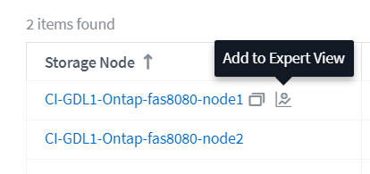
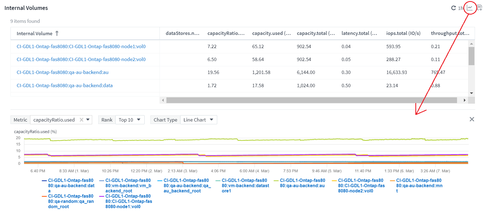
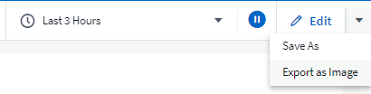
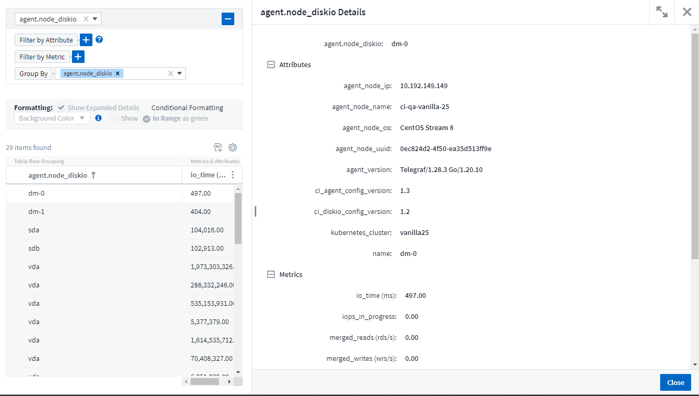
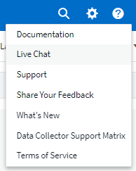
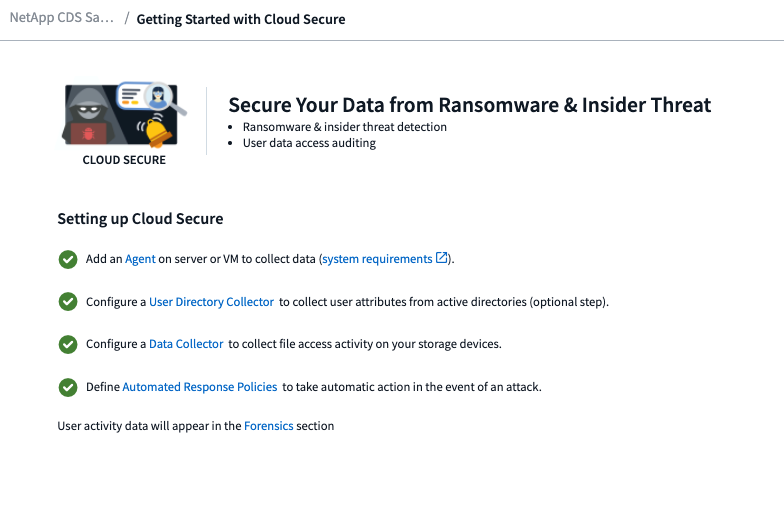
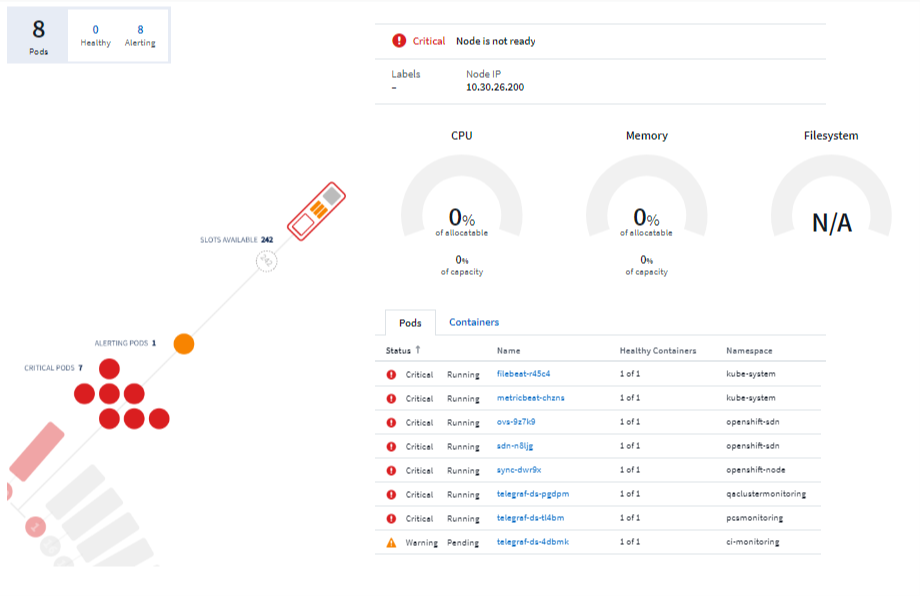
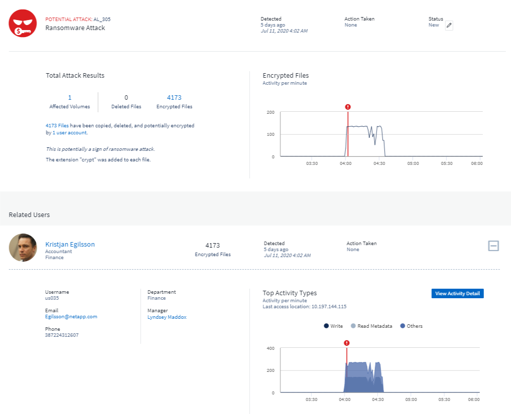
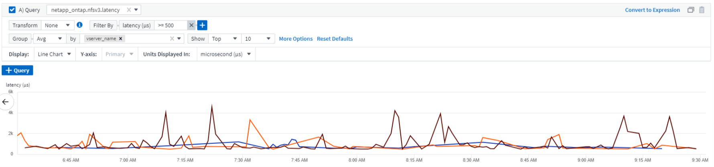
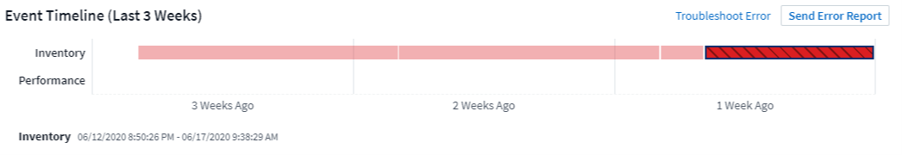

セキュリティ
セキュリティ
Cloud Insightsの新機能
 変更を提案
変更を提案
ネットアップは、製品やサービスの改善と強化を継続的に行っています。ここでは、Cloud Insights の商用版で利用可能な最新の機能の一部を紹介します。

|
これらの機能の一部は、Cloud Insights 連邦版では使用できない場合や、機能が制限されている場合があります。可能な限り、これらの違いはドキュメントに記載されています。 |
2024年3月
ワークロードセキュリティエージェントの詳細
各ワークロードセキュリティエージェントには独自のランディングページがあり、エージェントに関する概要情報だけでなく、そのエージェントに関連付けられているインストール済みのデータコレクタおよびユーザディレクトリコレクタも簡単に確認できます。

より多くのデータを迅速にグラフ化
アセットのランディングページのデータを分析する際に、エキスパートビューのグラフに簡単にデータを追加できます。ランディングページの各テーブルで、オブジェクトタイプに関連データがある場合は、そのオブジェクトにカーソルを合わせると、[エキスパートビューに追加]アイコンが表示されます。このアイコンを選択すると、そのオブジェクトが[Additional Resources]に追加され、[Expert View]チャートに表示されます。

ランディングページの表のデータを独自のグラフで表示することもできます。[Show Chart]アイコンを選択すると、テーブルの下にグラフが表示されます。

2024年2月
ユーザビリティの向上
右隅のドロップダウンから_Export as Image_を選択して、現在のダッシュボードの*スナップショット*を保存します。Cloud Insightsは、現在のウィジェットの状態の.pngを作成します。

*ウィジェット、モニターなどのオブジェクトとメトリックの選択*がこれまで以上に簡単になりました。 目的のオブジェクトタイプを選択し、別のドロップダウンでそのオブジェクトに関連するメトリックを選択します。

*これらのページの上部にあるアイコンを選択して、Data CollectorとAcquisition Unit *のリストを.csvにエクスポートします。
目的の情報を見つけやすくするために、[ヘルプ]>[サポート]ページが再編成されました。お客様からご要望があったため、このページに API Swagger *とユーザドキュメントへの直接リンクが追加されました。

[Alerts]リストページの[triggeredOn]列にある[Links]*をクリックすると、該当するランディングページに移動します（そのオブジェクトにランディングページがある場合）。

ネームスペース内のすべての変更を表示する
Kubernetes Change Analysisで、クラスタとネームスペースを選択したときの変更のタイムラインを確認できるようになりました。以前のバージョンでは、[Workload]も選択しておく必要があります。 クラスタとネームスペースでフィルタリングすると、そのネームスペース内のすべてのワークロードの変化を示すタイムラインが1行に表示されます。

アラートの関連ログ
ログアラートを表示すると、関連するログエントリが新しいテーブルに表示されます。 ログエントリは、アラートと同じソースと期間に発生し、同じ条件の対象となる場合に関連します。[Analyze Logs]を選択して詳細を確認します。

ONTAPスイッチデータの収集
ワークロードセキュリティデータコレクタAPI
大規模な環境では、新しいData Collectors APIを使用してワークロードセキュリティコレクタの作成を自動化できます。詳細については、* Admin > API Access > API Documentation *に移動し、_Workload Security_APIタイプを選択します。
2024年1月
まだ使用していないCloud Insights機能を試す
Cloud Insightsの初回トライアルに加えて、 "モジュールのトライアル"。たとえば、Cloud Insightsにサブスクライブしていて、ストレージと仮想マシンを監視していた場合、Kubernetesを環境に追加すると、Kubernetesオブザーバビリティの30日間トライアルに自動的に参加できます。Kubernetes Observability Managed Unitの使用状況は、試用期間が終了するまで、サブスクライブ済みのエンタイトルメントにはカウントされません。
ワークロードの健全性
ワークロードの健全性は、* Kubernetes > Explore > Workloads *ページで一目で確認できるため、どのワークロードがパフォーマンスに優れていて、どのワークロードに支援が必要かをすばやく確認できます。

Data Collector のアップデート
Data Domainの識別
Data Domainコレクタが改善され、フェイルオーバー時の耐久性を確保するためにHAシステムをより適切に識別できるようになりました。この変更により、HAシステム内のData Domainアプライアンスが1回だけ原因されます。これにより、削除するアセットのアノテーションが原因されます（アレイが再識別されるため）。Data Domainオブジェクトにアノテーションを再アタッチする必要があります。
ランサムウェア検出MLアルゴリズムの強化
ワークロードセキュリティには、最も高度な攻撃をより迅速かつ正確に検出するための、新しい第2世代のランサムウェア検出MLアルゴリズムが含まれています。
行動の「季節性」:週末の行動は、平日と午前の行動とは異なるパターンに従う場合があります。ワークロードセキュリティアルゴリズムでは、この季節性を考慮に入れています。
2023年12月
分析を一目で変更
Kubernetes "変更分析" Kubernetes環境に対する最近の変更をオールインワンで確認できます。アラートと導入ステータスをすぐに確認できます。変更分析を使用すると、導入と設定の変更をすべて追跡し、Kubernetesのサービス、インフラ、クラスタの健全性とパフォーマンスに関連付けることができます。

Kubernetesワークロードパフォーマンスダッシュボード
ワークロードのパフォーマンスは、Kubernetesワークロードのパフォーマンスを包括的なダッシュボードで一目で確認できます。ボリューム、スループット、レイテンシ、再送信の傾向のグラフや、環境内の各ネームスペースのワークロードトラフィックの表をすばやく確認できます。フィルタを使用すると、関心のある分野に簡単にフォーカスできます。
 メニュー（幅= 400）"]
メニュー（幅= 400）"]

クエリの詳細を1つの画面に表示
クエリで行を選択すると、選択した行の属性、アノテーション、および指標の詳細がサイドパネルに表示され、オブジェクトのランディングページにドリルダウンしなくても役立つ情報が表示されます。行またはサイドパネルのリンクにより、ナビゲーションが容易になります。

Data Collectorのアップデート：
-
* Brocade FOS REST *：このコレクタは「プレビュー」から移動され、一般提供されるようになりました。注意すべき点：
-
FOSでは、REST APIがFOS 8.2で導入されました。ただし、ルーティングなどの一部の機能では、9.0のREST API機能しか使用できません。
-
8.2以降のFOSアセットが混在したファブリックと8.2より前のアセットで構成されているファブリックでは、Cloud Insights FOS RESTコレクタで古いアセットを検出できません。FOS RESTコレクタを編集して、デバイスのIPv4アドレスをカンマで区切って作成し、そのコレクタから除外することができます。
-
-
SELinux: Cloud Insightsには、Linux Acquisition Unitの初期インストールが強化されており、SELinuxの強制が有効になっているLinux環境での動作の堅牢性を確保します。これらの機能拡張は_new_au環境にのみ影響します。AUのアップグレードに関連するSELinuxの問題がある場合は、NetAppサポートに連絡してSELinux構成の修正を依頼してください。
2023年11月
ワークロードのセキュリティ：コレクタの一時停止/再開
Workload Securityでは、コレクタがin_running_stateの場合、Data Collectorを一時停止できます。コレクターの「3つのドット」メニューを開き、一時停止を選択します。コレクタが一時停止している間は、ONTAPからデータが収集されず、コレクタからONTAPにデータが送信されません。収集を再開するには、[Resume]を選択します。
ストレージノードのサポート情報
ストレージノードのランディングページの_User Data_セクションには、ご利用のサポートサービス、現在のステータス、サポートステータス、保証終了日に関する情報が一目でわかるように表示されます。Cloud Insightsは現在、この情報をNetAppデバイスに対してのみ自動公開していることに注意してください。これらのサポートフィールドはアノテーションであるため、クエリやダッシュボードで使用できます。

VMwareタグをCloud Insightsアノテーションにマッピング
。 "VMware" データコレクタを使用すると、VMwareで設定されている同名タグを使用してCloud Insightsのテキスト注釈を入力できます。
FOS 9.1.1c以降のファームウェアに対するBrocade CLIコレクタの信頼性の向上
9.1.1cファームウェアを実行している一部のBrocadeファイバチャネルスイッチでは、特定のCLIコマンドの出力の先頭に「motd」ログインバナーテキストが付加されたり、ユーザがデフォルトのパスワードを変更するように警告が表示されたりすることがあります。Brocade CLIコレクタが拡張され、これら2種類の無関係なテキストが無視されるようになりました。
この機能拡張以前は、仮想ファブリックが存在しないFOS 9.1.1cスイッチだけがこのコレクタタイプで検出されていました。
2023年10月
ワークロードセキュリティの強化
ワークロードのセキュリティが改善され、次の機能が追加されました。
-
アクセス拒否：ワークロードセキュリティをONTAPと統合して "「アクセス拒否」イベント" また、追加の分析と自動応答レイヤーを提供します。
-
許可されるファイルの種類：既知のファイル拡張子に対してランサムウェア攻撃が検出された場合、そのファイル拡張子を "許可されているファイルタイプ" 不要なアラートを回避するためのリスト。
モジュールのトライアル
Cloud Insightsの初回トライアルに加えて、 "モジュールのトライアル"。たとえば、インフラオブザーバビリティにすでにサブスクライブしているものの、Kubernetesを環境に追加する場合は、自動的にKubernetesオブザーバビリティの30日間トライアルに参加します。試用期間の終了時に、Kubernetes Observability Managed Unitの使用料金のみが請求されます。
指定したドメインへのアクセスを制限する
管理者とアカウント所有者は、次のことができるようになりました。 "Cloud Insightsアクセスの制限" 指定した電子メールドメインに送信します。[Admin]>[User Management]*に移動し、[_Restrict Domains]ボタンを選択します。
 モーダル"]
モーダル"]
Data Collector のアップデート
Data Collector/Acquisition Unitに次の変更が加えられています。
-
* Isilon/PowerScale REST*：Cloud Insightsの強化された分析機能に、さまざまな新しい属性とメトリックが_emc_isilon.node_pool.*_という名前で追加されました。これらのカウンタと属性により、ユーザーはダッシュボードを構築して_node_pool_capacity消費量を監視することができます。異なるハードウェアノードモデルから構築されたIsilonクラスターのユーザーは複数のノードプールを持ち、ノードプールレベルでのHDD/SSD/総容量消費量を把握することは、監視と計画の両方に役立ちます。
-
* Rubrik *「サービスアカウント」認証のサポート: Cloud InsightsのRubrikコレクタは、従来のHTTP基本認証(ユーザー名とパスワード)と、ユーザー名+シークレット+組織IDを必要とするRubrikのサービスアカウントアプローチの両方をサポートするようになりました。
2023年9月
ログで必要なものを簡単に検索
ログクエリ（オブザーバビリティ>ログクエリ>+新規ログクエリ）には、次のものが含まれます。 "キノウカクチョウ" ログの検索を容易にし、より有益な情報を提供します。
含める/除外する
値をフィルタリングするときに、フィルタに一致する結果を*含める*か*除外*かを簡単に選択できます。「除外」を選択すると、「非<value>」フィルタが作成されます。INCLUDE値とEXCLUDE値を1つのフィルタで組み合わせることができます。
 ラジオボタンを表示するフィルタ"]
ラジオボタンを表示するフィルタ"]
高度なクエリ
*高度なクエリ*では、AND、NOT、OR、ワイルドカードなどを使用して値を結合または除外する「自由形式」フィルタを作成できます。

[Filter By]と[Advanced Query]は、「AND」でまとめて1つのクエリを形成します。結果が結果リストとグラフに表示されます。
グラフでのグループ化
[*グループ化]*にログ属性を選択すると、リストとグラフに現在のフィルタの結果が表示されます。グラフでは、列が色別にグループ化されています。グラフの列にカーソルを合わせると、グラフの凡例を展開したときに表示される全体的な情報と同様に、特定のエントリに関する詳細が表示されます。 凡例では、特定のグループに含めるフィルタまたは除外フィルタを設定することもできます。

「フローティング」ログ詳細パネル
[Log Query]を使用してログを検索するときに、リスト内のエントリを選択すると、そのエントリの詳細パネルが開きます。スライドアウトパネルを「フローティング」（画面の残りの部分に表示）または「ページ内」（ページ内の独自のフレームとして表示）を選択できるようになりました。これらのビューを切り替えるには、パネルの右上隅にある[ページ内/フローティング]ボタンを選択します。

メニューを折りたたむ
左側のCloud Insightsナビゲーションメニューを折りたたむには、メニューの下にある[最小化]ボタンを選択します。メニューが最小化されている間に、アイコンにカーソルを合わせると、どのセクションが開いているかが表示されます。アイコンを選択するとメニューが開き、そのセクションに直接移動します。

Data Collectorの改善点
Cloud Insightsでは、データコレクタ情報の表示と検索が容易になりました。
-
*データコレクタリストの処理がより効率的になるため、これらのリストの表示とナビゲートにかかる時間が大幅に短縮されます。多数のデータコレクタが存在する大規模な環境では、データコレクタの一覧表示が大幅に改善されます。
-
Data Collector Support Matrix *は、.pdfファイルから.htmlベースのページに移行しました。これにより、ナビゲートが迅速になり、メンテナンスが容易になりました。新しいマトリックスはこちら： https://docs.netapp.com/us-en/cloudinsights/reference_data_collector_support_matrix.html
2023年8月
Isilon/PowerScaleログと高度な分析データの収集
Isilon RESTコレクタとPowerScale RESTコレクタの改善点は次のとおりです。
-
Isilonログイベントはクエリやアラートで使用できます。
-
Isilon高度な分析属性は、クエリ、ダッシュボード、アラートで使用できます。
-
EMC_Isilon.cluster
-
emc_isilon.node
-
emc_isilon.node_disk
-
emc_isilon.net_iface
-
これらは、Isilon RESTコレクタやPowerScale RESTコレクタのユーザーに対してデフォルトで有効になっています。NetAppでは、Isilon CLIベースのコレクタのユーザーは、上記のような拡張機能を利用するために、新しいREST APIベースのコレクタに移行することを強く推奨しています。
ワークロードマップの改善
ワークロードマップは、同じワークロードと通信する場合は、類似するすべての外部サービスを1つのノードにグループ化するため、グラフの複雑さが軽減され、サービスの相互接続方法がわかりやすくなります。
グループ化されたノードを選択すると、そのノードに関連する各外部サービスのネットワークトラフィックメトリックを含む詳細な表が表示されます。
Kubernetes Managed Unitの使用状況の調整
Kubernetesクラスタ環境のコンピューティングリソースがNetApp Kubernetes Monitoring Operatorと基盤となるインフラデータコレクタ（VMwareなど）の両方によってカウントされた場合、これらのリソースの使用量が調整されて、Managed Unitのカウントが最も効率的に行われるようになります。Kubernetes MUの調整は、Admin > SubscriptionページのSummaryタブとUsageタブの両方で確認できます。
[Summary]タブ：

[Usage]タブ：
 タブに表示されるK8s MU調整"]
タブに表示されるK8s MU調整"]
コレクタ/取得の変更点：
Data Collector/Acquisition Unitに次の変更が加えられています。
-
Acquisition UnitがRHEL 8.7をサポートするようになりました。
メニューの改善
左側のナビゲーションメニューが更新され、お客様のワークフローをより適切にサポートできるようになりました。_kubernetes_などの新しいトップレベル項目は、顧客のニーズに迅速にアクセスできるようにし、統合管理者コンソールがテナント所有者の役割をサポートします。
変更のその他の例を次に示します。
-
最上位の_Observability_menuには、データ検出、アラート、ログクエリが表示されます。
-
オブザーバビリティとワークロードセキュリティの[API Access]機能は1つのメニューにまとめられています。
-
オブザーバビリティとワークロードセキュリティの[Notifications]機能も同様に、1つのメニューに追加されました。

各メニューに表示される機能の簡単なリストを次に示します。
オブザーバビリティ：
-
製品概要（ダッシュボード、指標クエリ、インフラに関する分析情報）
-
アラート（監視とアラート）
-
コレクタ（データコレクタとAcquisition Unit）
-
ログクエリ
-
Enrich（アノテーションとアノテーションルール、アプリケーション、デバイス解決）
-
レポート作成
Kubernetes：
-
クラスタの詳細とネットワークマップ
ワークロードのセキュリティ：
-
アラート
-
フォレンジック
-
コレクタ
-
ポリシー
ONTAPの基礎：
-
データ保護
-
セキュリティ
-
アラート
-
インフラ
-
ネットワーキング
-
ワークロード
-
VMware
管理：
-
API アクセス
-
監査
-
通知
-
サブスクリプション情報
-
ユーザ管理
2023年7月
最近の変更を表示します
Data Collectorのランディングページに、最近の変更のリストが表示されるようになりました。データコレクタのランディングページの下部にある[Recent Changes]ボタンをクリックするだけで、最近のデータコレクタの変更が表示されます。

オペレータの改善
に次の改善が加えられました "Kubernetesオペレータ" 導入：
-
Dockerのメトリック収集をバイパスするオプション
-
Telegrafデーモンセットおよびレプリカセットに許容範囲を追加およびカスタマイズする機能
Insight：コールドストレージの再利用
。 "ONTAPコールドストレージInsightを再利用します" FlexGroupがサポートされるようになりました。すべてのお客様がこのサービスを利用できるようになりました。
Operator Image Signatureの略
NetApp Kubernetes Monitoring Operatorのプライベートリポジトリを使用するお客様向けに、Operatorのインストール時にイメージ署名公開キーをコピーできるようになり、ダウンロードしたソフトウェアの信頼性を確認できるようになりました。オプションの手順で[_Copy Image Signature Public Key]ボタンを選択して、オペレータイメージをプライベートリポジトリにアップロードします。

クエリの集計、条件付き書式など
集計、単位の選択、条件付き書式、列の名前変更は、ダッシュボード表ウィジェットの最も便利な機能の1つであり、で同じ機能を使用できるようになりました "クエリ"。
 ページの結果には、集計、条件付き書式、単位表示、列名の変更が表示されます"]
ページの結果には、集計、条件付き書式、単位表示、列名の変更が表示されます"]
これらの機能は、統合タイプのデータ（Kubernetes、ONTAP Advanced Metricsなど）で使用できるようになりました。インフラオブジェクト（ストレージ、ボリューム、スイッチなど）についても近日提供予定です。
監査用API
APIを使用して、監査対象イベントを照会またはエクスポートできるようになりました。[Admin]>[API Access]に移動し、詳細については[_API Documentation_link]を選択してください。

Data Collector：Trident Economyの略
Cloud InsightsがTridentエコノミードライバをサポートするようになり、次のようなメリットが実現しました。
-
ポッドとONTAPのqtreeのマッピングとパフォーマンス指標を可視化
-
Kubernetesポッドからバックエンドストレージへのシームレスなトラブルシューティングと簡単なナビゲーションを提供します
-
監視機能でバックエンドのパフォーマンスの問題をプロアクティブに検出します
2023年6月
使用状況を確認してください
2023年6月より、Cloud Insightsでは、機能セットに基づくManaged Unitの使用量の内訳を提供しています。インフラのManaged Unit（MU）の使用状況やKubernetesに関連付けられたMUの使用状況をすばやく表示、監視できるようになりました。

Kubernetes Network Monitoring and Mapは、すべてのユーザに使用できます
。 "Kubernetesのネットワークパフォーマンスとマップ" Kubernetesワークロード間の依存関係をマッピングすることでトラブルシューティングを簡易化し、Kubernetesのネットワークパフォーマンスのレイテンシや異常をリアルタイムで可視化して、ユーザに影響が及ぶ前にパフォーマンスの問題を特定します。多くのお客様がプレビュー中に役立つと感じており、今では誰もが楽しめるようになっています。
コレクタ/取得の変更点：
Data Collector/Acquisition Unitに次の変更が加えられています。
-
Data DomainおよびCohesity MUは、40 TiB：1 MUで計測されます。
-
Acquisition UnitでRHELとRocky 9.0および9.1がサポートされるようになりました。
新しいONTAP Essentialsダッシュボード
次のONTAP Essentialsダッシュボードがプレビュー環境で使用可能になり、すべてのユーザーが使用できるようになりました。
-
セキュリティダッシュボード
-
データ保護ダッシュボード（ローカルとリモートの保護の概要を含む）
追加のシステムモニタ
Cloud Insightsには、次のシステムモニタが付属しています。
-
Storage VM FCPサービスを使用できません
-
Storage VM iSCSIサービスを使用できません
2023年5月
Kubernetes Monitoring Operatorのインストールが改善されました
のインストールと設定 "NetApp Kubernetes Monitoring Operator" 以下の改善により、これまで以上に簡単になりました。
-
環境 "構成設定" は、自己文書化された単一の構成ファイルに保持されます。
-
Kubernetes Monitoring Operatorイメージをプライベートリポジトリにアップロードするためのステップバイステップの手順。
-
単一のコマンドで簡単にアップグレードでき、カスタム構成を維持しながらKubernetes Monitoringをアップグレードできます。
-
セキュリティの強化：APIキーがシークレットを安全に管理します。
-
CI / CD自動化ツールとの統合と導入が容易
ストレージ仮想化
Cloud Insights では、ローカルストレージがあるストレージアレイと他のストレージアレイが仮想化されているストレージアレイを区別できます。これにより、コストを関連付け、フロントエンドからインフラのバックエンドまで、パフォーマンスを区別することができます。

新しいWebhookパラメータ
を作成する場合 "ウェブフック" 通知。Webhook定義に次のパラメータを含めることができます。
-
%%TriggeredOnKeys%%
-
%%TriggeredOnValues%%
Kubernetesのデータをレポートします
Cloud Insightsで収集されたKubernetesデータ（Persistent Volumes（PV）、PVC、ワークロード、クラスタ、ネームスペースなど）をレポートに使用できるようになり、チャージバック、トレンド分析、予測、TTF計算、 また、Kubernetesの指標に関するその他のビジネスレポートも提供しています。
新規のお客様にはデフォルトのONTAP システムモニタが有効になっています
新しいCloud Insights 環境では、多くのONTAP システムモニタがデフォルトで有効になっています（resumed）。以前は、ほとんどのモニタはデフォルトで_Paused_stateに設定されていました。ビジネスニーズは会社によって異なるため、を参照することを常にお勧めします "システムモニタ" アラートの必要性に応じて、それぞれを一時停止または再開します。
2023年4月
Kubernetesのパフォーマンス監視とマッピング
。 "Kubernetesのネットワークパフォーマンスとマップ" Kubernetesワークロード間の依存関係をマッピングすることで、トラブルシューティングを簡易化します。Kubernetesのネットワークパフォーマンスのレイテンシや異常をリアルタイムで可視化し、ユーザに影響が及ぶ前にパフォーマンスの問題を特定します。
この機能は、Kubernetesのトラフィックフローを分析、監査することで全体的なコストを削減するのに役立ちます。
主な特長：
•ワークロードマップは、Kubernetesワークロードの依存関係とフローを示し、ネットワークとパフォーマンスの問題を明らかにします。
•Kubernetesポッド、ワークロード、ノード間のネットワークトラフィックを監視し、トラフィックとレイテンシの問題の原因を特定します。
•入力、出力、リージョン間、ゾーン間のネットワークトラフィックを分析することで、全体的なコストを削減します。
「スライドアウト」の詳細を示すワークロードマップ：
 パネルと詳細を示すワークロードマップの例"]
パネルと詳細を示すワークロードマップの例"]
Kubernetesのパフォーマンスの監視とマップは、として使用できます "プレビュー（ Preview ）" フィーチャー（ Feature ）：
ONTAP Essentialsセキュリティダッシュボード
。 "セキュリティダッシュボード" では、現在のセキュリティ状況を瞬時に把握でき、ハードウェアとソフトウェアのボリューム暗号化、ランサムウェア対策のステータス、クラスタの認証方法をグラフで確認できます。セキュリティダッシュボードは、として使用できます "プレビュー（ Preview ）" フィーチャー（ Feature ）：

ONTAP コールドストレージを再利用します
ONTAP コールドストレージの再利用_Insightは、ONTAP システム上のボリュームについて、コールド容量、潜在的なコスト/電力削減、推奨される対処方法に関するデータを提供します。

このインサイトでは、次のような質問を回答 できます。
-
ストレージクラスタ上のコールドデータの量は、（a）高コストのSSDディスク、（b）HDDディスク、（c）仮想ディスクにどれくらいありますか？
-
最適化されていないストレージに関して、最も影響を与えているワークロードは何ですか？
-
特定のワークロードでデータがコールドである期間（日数）
Reclaim ONTAP コールドストレージ_はとみなされます "_プレビュー" このため、機能は変更される場合があります。
サブスクリプション通知はバナーメッセージも制御します
サブスクリプション通知の受信者を設定する（[Admin]>[Notifications]）では、サブスクリプション関連の製品内バナー通知を表示するユーザも制御できるようになりました。

レポート機能の外観が一新されました
Cloud Insights レポート画面の外観が新しくなり、メニューナビゲーションの一部が変更されていることがわかります。これらの画面とナビゲーションの変更は、現在のバージョンで更新されています "レポートドキュメント"。

モニタはデフォルトで一時停止されています
新しいCloud Insights 環境の場合は、次の点に注意してください "システム定義のモニタ" デフォルトではアラート通知は送信しません。モニタに1つ以上の配信方法を追加して、アラートを通知するモニタの通知を有効にする必要があります。
既存のCloud Insights 環境では、現在_Paused_stateにあるシステム定義モニタのdefault_global_notification受信者リストが削除されました。現在アクティブなシステム定義モニターの通知設定と同様に、ユーザー定義通知も変更されません。
[API Metering]タブをお探しですか？
APIメーターは、[サブスクリプション]ページから*[管理者]>[APIアクセス]ページに移動しました。
2023年3月
Cloud Connection for ONTAP 9.9以降は廃止されました
Cloud Connection for ONTAP 9.9以降のデータコレクタは廃止されました。 2023年4月4日以降、環境内のCloud Connectionデータコレクタでデータが収集されなくなり、ポーリング時にエラーが表示されます。Cloud Connectionデータコレクタは、次回の更新でCloud Insights から完全に削除されます。
2023年4月4日より前のリリースでは、クラウド接続で現在収集されているすべてのONTAP システムについて、新しいNetApp ONTAP データ管理ソフトウェアデータコレクタを設定する必要があります。 "詳細はこちら。"。
2023年1月
新しいログモニタ
私達は約ダースを加えた "追加のシステムモニタ" インターコネクトリンクの切断、ハートビートの問題などに関するアラートを送信します。また、SnapMirrorの自動再同期、MetroCluster ミラーリング、FabricPool ミラー再同期の変更に関するアラートを通知するために、3つの新しいデータ保護ログモニタが追加されました。
これらのモニタの一部はデフォルトで_enabled_byになっています。これらのモニタにアラートを送信しない場合は、_pause_themを実行する必要があります。また、これらのモニタは通知を配信するように設定されていないことに注意してください。電子メールまたはWebフックでアラートを送信する場合は、これらのモニタで通知の受信者を設定する必要があります。
すべてのダッシュボードテーブルウィジェットの.csvエクスポート
データへのアクセス性を確保することは、.csvエクスポートを行うために不可欠です クエリするデータのタイプ（アセットまたは統合）に関係なく、すべての指標クエリ、ダッシュボードテーブルウィジェット、オブジェクトランディングページで使用できます。
列の選択、列の名前変更、単位変換などのデータのカスタマイズも、新しいエクスポート機能に含まれるようになりました。
2022年12月
Cloud Insights トライアルでランサムウェア防御やその他のセキュリティ機能をご確認ください
本日より、Cloud Insights の新しいトライアル版に登録することで、ランサムウェア検出や自動化されたユーザーブロック応答ポリシーなどのセキュリティ機能を調べることができます。トライアルにサインアップしていない場合は、今すぐお試しください。
Kubernetesワークロードには独自のランディングページがあります
ワークロードはKubernetes環境の重要な要素であるため、Cloud Insights はこれらのワークロードのランディングページを提供できるようになりました。ここから、Kubernetesワークロードに影響する問題を表示、調査、トラブルシューティングできます。

チェックサムをチェックしてください
WindowsおよびLinux用のエージェントのインストール中にチェックサム値を提供するように依頼されましたが、これは素晴らしいアイデアだと思います。ここには次のようなものがあります

ログ・アラートの改善
グループ化
ログモニタを作成または編集するときに、「グループ化」属性を設定して、より集中的なアラートを生成できるようになりました。モニタ定義の「フィルタ」設定の下にある「グループ化」属性を探します。

この変更により、メトリックモニタとログモニタは、モニタ定義の「グループ化基準」の部分を正規化することで機能パリティになります。このパリティにより、お客様は、システム定義のすべての*システム定義デフォルトモニターのクローン/複製を作成して、さらにカスタマイズすることができます。
複製
これで、変更ログ、Kubernetesログ、およびData Collectorログモニタを複製（複製）できるようになりました。これにより、新しいカスタムログモニタが作成され、特定の定義に変更できます。

11 SnapMirrorを対象としたビジネス継続性を実現する、新しいデフォルトのONTAP モニタ
私たちは、10個近くの新しい製品を追加しました "システムモニタ" SnapMirror for Business Continuity（SMBC）については、SMBC証明書およびONTAP メディエーターの変更を通知します。
2022年11月
40以上の新しいセキュリティ、データ収集、CVOの監視が追加されました！
Cloud Volume 、セキュリティ、およびデータ保護に関する潜在的な問題を警告するために、システム定義の新しいモニターが多数追加されました。これらのモニターの詳細については、こちらをご覧ください "こちらをご覧ください"。
2022年10月
ONTAP の自律的ランサムウェア防御統合によるランサムウェア検出の精度と精度の向上
Cloud Secure は、ONTAP との統合を通じてランサムウェアの検出を改善します "自律的なランサムウェア防御" （ARP）。
Cloud Secure は、潜在的なボリュームファイル暗号化アクティビティでONTAP ARPイベントを受信します
-
ボリューム暗号化イベントとユーザアクティビティを関連付けて、破損の原因となっているユーザを特定する。
-
攻撃をブロックする自動応答ポリシーを実装します。
-
影響を受けたファイルを特定し、迅速なリカバリとデータ侵害の調査に役立ちます。
2022年9月
Basic Editionで使用可能なモニタ
ONTAP "デフォルトのモニタ" Cloud Insights Basic Editionで使用できるようになりました。これには、70を超えるインフラ監視と30のワークロード例が含まれます。
ONTAP PowerダッシュボードとStorageGRID ダッシュボード
ダッシュボードギャラリーには、ONTAP 電源と温度の新しいダッシュボードと、StorageGRID 用の4つのダッシュボードが含まれています。ONTAP の電力測定基準やStorageGRID データを収集している環境では、[*+ from Gallery]を選択して、これらのダッシュボードをインポートします。
しきい値が表形式で一目でわかるようにします
条件付き書式を使用すると、表ウィジェットで警告レベルと重大レベルのしきい値を設定して強調表示し、異常なデータポイントを瞬時に可視化できます。

Security Monitorサービスの略
Cloud Insights では、ONTAP システムでFIPSモードが無効になっていることが検出されるとアラートが生成されます。詳細については、をご覧ください "システムモニタ"にアクセスして、この領域をご覧ください。近日公開予定のセキュリティモニターがさらに増えます。
どこからでもチャットできます
新しい* Help > Live Chat *リンクを選択すると、任意のCloud Insights 画面からネットアップサポートスペシャリストとチャットできます。ヘルプはから入手できます。 アイコンをクリックします。

より目に見える洞察
環境でが使用されている場合 "インサイト" Spress_or_Kubernetes名前空間の_共有リソースのように、影響を受けるリソースのアセットランディングページには、Insight自体へのリンクが含まれるようになり、探索とトラブルシューティングが迅速になりました。
新しいデータコレクタ
-
Amazon S3（プレビュー版）
-
Brocade FOS 9.0.x
-
Dell/EMC PowerStore 3.0.0.0
Data Collector のその他のアップデート
これで、すべてのデータソースが最適化され、Acquisition Unitの更新やパッチの適用後にパフォーマンスのポーリングが再開されるようになりました。
オペレーティングシステムのサポート
Cloud Insights Acquisition Unitでサポートされるオペレーティングシステムは次のとおりです "すでにサポートされています"：
-
Red Hat Enterprise Linux 8.5、8.6
2022年8月
Cloud Insights の外観は新しくなっています。
今月から、「モニターと最適化」という名称が「観察性」に変更されました。ダッシュボード、クエリ、アラート、レポートなど、お気に入りの機能がすべてここに表示されます。また、新しい「セキュリティ」メニューで「Cloud Secure 」を探します。メニューのみが変更されています。機能は変更されていません。

「ヘルプ」メニューを検索していますか？
画面の右上に表示されるようになりました。

どこから始めるべきかわからない場合は、ONTAP の基礎を確認してください。
"* ONTAP Essentials *" は、NetApp ONTAP のインベントリ、ワークロード、データ保護に関する詳細なビューを提供する一連のダッシュボードとワークフローで、ストレージ容量やパフォーマンスを日々予測することもできます。利用率の高いコントローラが稼働しているかどうかを確認することもできます。ONTAP Essentialsは、ネットアップONTAP のすべての監視ニーズに最適な環境です。
ONTAP Essentialsは、すべてのエディションで利用可能です。既存のONTAP オペレータや管理者が直感的に操作できるように設計されており、ActiveIQ Unified Managerからサービスベースの管理ツールへの移行を容易にします。

ストレージデータファミリーはマージされます
それを求められて、今それを持っている。ストレージ2および10進数のデータ単位が、ビットとバイトからテビッツやテラバイトに至る1つのファミリーに統合され、ダッシュボードにデータを簡単に表示できるようになりました。また、データレートは、現在では大きなファミリーの1つとなっています。

ストレージで使用されている電力量
netapp_ontap.storage_shelf、netapp_ontap.system_node、netapp_ontap.clusterの各指標を使用して、ONTAPストレージシェルフとノードの消費電力、温度、ファン速度を表示および監視します（消費電力のみ）。

プレビューからサイズ変更されたフィーチャー
次の機能がプレビューから除外され、すべてのお客様が利用できるようになりました。
* 特徴 * |
* 概要 * |
Kubernetesネームスペースのスペースが不足しています |
Space_Insightで実行されている_Kubernetes名前空間では'容量不足のリスクがあるKubernetesネームスペース上のワークロードを確認できます各スペースがフルになるまでに推定される残り日数を確認できます |
応力の下の共有リソース |
Stress_INSIGHTの_Shared Resourceは、AI/MLを使用して、リソース競合が環境におけるパフォーマンス低下の原因となっている場所を自動的に特定し、影響を受けたワークロードを強調表示し、推奨される対処方法を提供してパフォーマンスの問題をより迅速に解決します。 |
Cloud Secure –攻撃に対するユーザアクセスをブロックします |
攻撃が検出されたときにユーザーアクセスをブロックする機能により、ビジネスクリティカルなデータの保護を強化できます。 |
データ収集の健全性
Cloud Insights には、Acquisition Unit用に2つの新しいハートビートモニタと、データコレクタの障害を通知する2つのモニタが用意されています。これらのコマンドを使用すると、データ収集の問題を迅速に通知できます。
Data Collection_monitorグループで次のモニタを使用できるようになりました。
-
Acquisition Unit Heartbeat - Criticalをクリックします
-
Acquisition Unit Heartbeat -警告
-
コレクタでエラーが
-
コレクタ警告
デフォルトでは、これらのモニタは_Paused _状態になっています。アラートをアクティブ化すると、データ収集の問題に関するアラートが表示されます。
APIトークンの自動更新
APIアクセストークンを自動更新に設定できるようになりました。この機能を有効にすると、期限切れトークン用に新しい/更新されたAPIアクセストークンが自動的に生成されます。期限切れトークンを使用しているCloud Insights エージェントは、対応する新規または更新されたAPIアクセストークンを使用するように自動的に更新されるため、シームレスな運用を継続できます。トークンを作成するときは、［トークンを自動的に更新］チェックボックスをオンにします。この機能は、現在のところ、Kubernetesプラットフォームで実行されているCloud Insights エージェントと最新のNetApp Kubernetes Monitoring Operatorでサポートされています。
Basic Editionは、これまで以上に多くの機能を提供します
トライアルは終了していますが、サブスクリプションがお客様に適しているかどうかまだ確認されていませんか？Basic Editionでは、現在のONTAP データコレクタでCloud Insights を引き続き使用できますが、VMwareのバージョン、トポロジ、およびIOS/Throughput / Latencyのデータも引き続きキャプチャできます。ストレージシステムでプレミアムサポートを受けているネットアップのお客様も、Cloud Insights のサポートを受けることができます。
詳細を確認する準備はできましたか？
ヘルプ>サポートページの「*ラーニングセンター」セクションで、NetApp University Cloud Insights コースへのリンクを確認できます。
オペレーティングシステムのサポート
Cloud Insights Acquisition Unitでは、さらに次のオペレーティングシステムがサポートされます "すでにサポートされています"：
-
Windows 11の場合
2022年6月
Kubernetesのクラスタの飽和などの詳細情報
Cloud Insights を使用すると、Kubernetes環境の調査がこれまでになく簡単になります。このページでは、彩度の詳細だけでなく、ネームスペースとワークロードをより明確に表示する、クラスタの詳細ページが改善されています。

クラスタリストページでは、ノード、ポッド、ネームスペース、ワークロードの数に加えて、飽和状態の情報も簡単に確認できます。

Kubernetesクラスタはどれくらい前ですか？
クラスタは世界で始まったばかりですか？それとも長いデジタルライフを体験したことがありますか？_Ageは、Kubernetesノードについて収集された時間メトリックとして追加されました。

容量のフルまでの時間予測
Cloud Insights は、監視対象の各内部ボリュームの容量がなくなるまでの日数を予測するダッシュボードを提供します。これらの値を設定することで、システム停止のリスクを大幅に軽減できます。

TTFカウンタは'ストレージ'ストレージ・プール'ボリュームにも使用できますこれらのオブジェクト用にダッシュボードが追加されるように、このスペースを監視してください。
Time to Fullの予測は_Preview_から移動し、すべての顧客に展開されます。
環境の変化
ONTAP 変更ログのエントリは、ログエクスプローラで確認できます。

オペレーティングシステムのサポート
Cloud Insights Acquisition Unitでサポートされるオペレーティングシステムは次のとおりです "すでにサポートされています"：
-
CentOSストリーム9.
-
Windows 2022
Telegraf Agent を更新
テレグラム統合データの取り込みのためのエージェントがバージョン*1.22.3*に更新され、性能とセキュリティが向上しました。
更新を希望するユーザーは、の適切なアップグレードセクションを参照できます "エージェントのインストール" ドキュメント
以前のバージョンのエージェントは、ユーザの操作を必要とせずに引き続き機能します。
フィーチャーのプレビュー（ Preview Features
Cloud Insights では、多数のエキサイティングなプレビュー機能が定期的にハイライトされています。これらの機能をプレビューする場合は、にお問い合わせください "ネットアップの営業チーム" を参照してください。
* 特徴 * |
* 概要 * |
Kubernetesネームスペースのスペースが不足しています |
Space_Insightで実行されている_Kubernetes名前空間では'容量不足のリスクがあるKubernetesネームスペース上のワークロードを確認できます各スペースがフルになるまでに推定される残り日数を確認できます |
Cloud Secure –攻撃に対するユーザアクセスをブロックします |
攻撃が検出されたときにユーザーアクセスをブロックする機能により、ビジネスクリティカルなデータの保護を強化できます。 |
応力の下の共有リソース |
Stress_INSIGHTの_Shared Resourceは、AI/MLを使用して、リソース競合が環境におけるパフォーマンス低下の原因となっている場所を自動的に特定し、影響を受けたワークロードを強調表示し、推奨される対処方法を提供してパフォーマンスの問題をより迅速に解決します。 |
2022年5月
ネットアップサポートとチャットでライブチャットできます
ネットアップのサポート担当者とライブチャットできます。 [ヘルプ]>[サポート]ページで、[チャット]アイコンをクリックするか、[お問い合わせ]セクションの_Chat_をクリックしてチャットセッションを開始します。チャットサポートは、米国の平日にStandard EditionおよびPremium Editionユーザが利用できます。

Kubernetesオペレータ
Cloud Insights の高度なKubernetes監視機能とクラスタエクスプローラを使用すると、作業を簡単に開始できます。
。 "NetApp Kubernetes Monitoring Operator" （NKMO）は、Kubernetes for Cloud Insights Insightsをインストールする際に推奨される方法です。より柔軟な構成で、より少ない手順で監視を行うことができます。また、Kubernetesクラスタ内で実行されている他のソフトウェアを監視する機会も強化されています。
詳細と前提条件については、上のリンクをクリックしてください
APIを使用してユーザと招待を管理します
Cloud Insights の強力なAPIを使用して、ユーザと招待を管理できるようになりました。詳細については、を参照してください "API Swaggerドキュメント"。
データ収集アラート
コレクタに失敗したため、重要なメトリックをお見逃しなく！
データコレクタをこれまで以上に簡単に追跡できるようになりました "アラート" データコレクタとAcquisition Unitの障害
デフォルトでは、これらのモニタは_Paused _です。有効にするには、お使いのモニタのページに移動し、「Acquisition Unit Shutdown」および「Collector Failed」を探して再開します。
ONTAP ストレージの変更に関するアラート
ストレージの予期しない変更がシステム停止につながるのを避けましょう。
ONTAP システムでFlexVol、ノード、およびSVMの変更や削除が検出されたときにアラートを受け取るようにCloud Insights を設定できるようになりました。
フィーチャーのプレビュー（ Preview Features
Cloud Insights では、多数のエキサイティングなプレビュー機能が定期的にハイライトされています。これらの機能をプレビューする場合は、にお問い合わせください "ネットアップの営業チーム" を参照してください。
* 特徴 * |
* 概要 * |
Kubernetesネームスペースのスペースが不足しています |
Space_Insightで実行されている_Kubernetes名前空間では'容量不足のリスクがあるKubernetesネームスペース上のワークロードを確認できます各スペースがフルになるまでに推定される残り日数を確認できます |
内部ボリュームとボリューム容量のフル予測 |
Cloud Insights は、監視対象の各内部ボリュームおよびボリュームの容量がなくなるまでの日数を予測できます。この値を設定することで、システム停止のリスクを大幅に軽減できます。 |
Cloud Secure –攻撃に対するユーザアクセスをブロックします |
攻撃が検出されたときにユーザーアクセスをブロックする機能により、ビジネスクリティカルなデータの保護を強化できます。 |
応力の下の共有リソース |
Stress_INSIGHTの_Shared Resourceは、AI/MLを使用して、リソース競合が環境におけるパフォーマンス低下の原因となっている場所を自動的に特定し、影響を受けたワークロードを強調表示し、推奨される対処方法を提供してパフォーマンスの問題をより迅速に解決します。 |
2022年4月
フィードバックを共有してください。
Cloud Insights の形成に役立つ情報をご用意しました。ネットアップの「 Insights to Action 」プログラムに参加すると、ポイントや賞品を獲得できます。 "* 今すぐ登録 *"！
ダッシュボードエディタが更新されました
ダッシュボード作成ツールを徹底的に見直し、データをより迅速に視覚化できるようにしました。Cloud Insights の [ ダッシュボード ] ページに移動して、既存のダッシュボードを編集したり、ダッシュボードギャラリーから追加したり、独自のダッシュボードを作成してチェックアウトしたりできます。

また、新しい Count 集約方式も導入されています。 棒グラフ、棒グラフ、円グラフ、円グラフの各ウィジェットでデータをグループ化すると、選択した指標の関連オブジェクトの数をすばやく簡単に表示できます。
 を示す [Aggregation] ドロップダウン"]
を示す [Aggregation] ドロップダウン"]
また、折れ線グラフで 3 つのうちの 1 つを選択できるようになりました "補間" 方法：
-
なし - 補間は行われません
-
線形 - 既存の点間のデータポイントを補間します
-
階段（ Stair ） - 前のデータ点を補間されたデータ点として使用します
Kubernetes インフラの監視機能が強化されました
Cloud Insights では、ポッド、デモ onset 、 ReplicaSets が作成または削除されたとき、および新しい展開が作成されたときにアラートを生成することで、 Kubernetes 環境の変更に優先的に対応します。Kubernetes ではデフォルトのステータスが _paused_state に監視されるため、必要なものだけを有効にする必要があります。
フィーチャーのプレビュー（ Preview Features
Cloud Insights では、多数のエキサイティングなプレビュー機能が定期的にハイライトされています。これらの機能をプレビューする場合は、にお問い合わせください "ネットアップの営業チーム" を参照してください。
* 特徴 * |
* 概要 * |
内部ボリュームとボリューム容量のフル予測 |
Cloud Insights は、監視対象の各内部ボリュームおよびボリュームの容量がなくなるまでの日数を予測できます。この値を設定することで、システム停止のリスクを大幅に軽減できます。 |
Cloud Secure –攻撃に対するユーザアクセスをブロックします |
攻撃が検出されたときにユーザーアクセスをブロックする機能により、ビジネスクリティカルなデータの保護を強化できます。 |
応力の下の共有リソース |
Stress Insight の共有リソースでは、 AI/ML を使用して、リソース競合が環境におけるパフォーマンス低下の原因となっている場所を自動的に特定し、影響を受けたワークロードを強調表示し、推奨される対処方法を提供して、パフォーマンスの問題をより迅速に解決します。 |
新しい Data Collector
-
* Cohesity SmartFiles *-このREST APIベースのコヒリティ・クラスターを取得して、「ビュー」（CI内部ボリューム）、各種ノード、パフォーマンスメトリックの収集を行います。
Data Collector のその他のアップデート
次のデータコレクタでのパフォーマンスデータの収集と表示が改善されました。
-
Brocade CLI
-
Dell/EMC VPLEX 、 PowerStore 、 Isilon / PowerScale 、 VNX Block / Clariion CLI 、 XtremIO 、 Unity/VNXe
-
Pure FlashArray
これらのパフォーマンス強化機能は、 VMware や Cisco のほか、すべてのネットアップデータコレクタですでに利用できます。今後数カ月にわたって、他のすべてのデータコレクタに展開される予定です。
2022年3月
ONTAP 9.9 以降のクラウド接続
。 "ONTAP 9.9 以降でのネットアップクラウド接続" データコレクタを使用すると、外部 Acquisition Unit をインストールする必要がなくなるため、トラブルシューティング、メンテナンス、および初期導入が簡単になります。
NetApp ONTAP モニタ用の新しい FSX
NetApp ONTAP 環境向けの FSX の監視は、簡単に行うことができます "システム定義のモニタ" インフラ（指標）とワークロード（ログ）の両方に対応します。


すべてのユーザが利用できる新しい Cloud Secure 機能
環境のセキュリティがこれまで以上に強化され、次の Cloud Secure 機能が一般提供されました。
* 特徴 * |
* 概要 * |
データ破壊–ファイル削除攻撃の検出 |
異常な大規模なファイル削除アクティビティを検出し、悪意のあるユーザによる悪意のあるファイルアクセスをブロックし、自動応答ポリシーを使用してスナップショットを自動的に作成します。 |
警告とアラートの通知は別々に表示されます |
警告とアラートの通知は別の受信者に送信できるため、適切なチームに情報を提供できます |
Telegraf Agent を更新
テレグラム統合データの取り込みのためのエージェントがバージョン 1.2 に更新され、性能とセキュリティが向上しました。
更新を希望するユーザーは、の適切なアップグレードセクションを参照できます "エージェントのインストール" ドキュメント
以前のバージョンのエージェントは、ユーザの操作を必要とせずに引き続き機能します。
Data Collector のアップデート
-
Broadcom Fibre Channel Switches データコレクタは、各インベントリポーリングで発行される CLI コマンドの数を減らすように最適化されています。
2022年2月
Cloud Insights は Apache log4j の脆弱性を解決します
お客様のセキュリティは、ネットアップの最優先事項です。Cloud Insights には、最新の Apache log4j の脆弱性に対処するためのソフトウェアライブラリの更新が含まれています。
ネットアップの Product Security Advisory Web サイトに掲載されている次の資料を参照してください。
これらの脆弱性の詳細と、ネットアップの対応については、を参照してください "ネットアップのニュースルーム"。
Kubernetes のネームスペースの詳細ページ
Kubernetes 環境の探索は、クラスタの名前空間の情報詳細ページにより、かつてないほど優れています。ネームスペースの詳細ページには、ネームスペースに使用されているすべてのアセットの概要が表示されます。これには、バックエンドのすべてのストレージリソースとその容量利用率が含まれます。

2021年12月
ONTAP システムをさらに緊密に統合
ネットアップの Event Management System （ EMS ；イベント管理システム）との新たな統合により、 ONTAP ハードウェア障害に対するアラート生成を簡易化できます。
"調査とアラート" Cloud Insights の下位レベルの ONTAP メッセージを使用して、トラブルシューティングのワークフローを通知および改善し、 ONTAP 要素管理ツールへの依存をさらに軽減します。
ログを照会しています
ONTAP システムの場合、 Cloud Insights クエリには強力な機能が搭載されています "ログエクスプローラ"を使用すると、 EMS ログエントリの調査とトラブルシューティングを簡単に行うことができます。

Data Collector レベルの通知。
システム定義のアラート用モニタとカスタム作成のモニタに加えて、 ONTAP データコレクタのアラート通知も設定できます。これにより、他のモニタアラートとは無関係に、コレクタレベルのアラートの受信者を指定できます。
Cloud Secure ロールの柔軟性が向上します
に基づいて、ユーザに Cloud Secure 機能へのアクセスを許可できます "ロール" 管理者が設定します。
ロール |
Cloud Secureアクセス |
管理者 |
アラート、フォレンジック、データコレクタ、自動応答ポリシー、 Cloud Secure 用 API など、すべての Cloud Secure 機能を実行できます。 |
ユーザ |
アラートを表示および管理し、フォレンジックを表示できます。ユーザーロールは、アラートステータスの変更、メモの追加、スナップショットの手動作成、ユーザーアクセスのブロックを行うことができます。 |
ゲスト |
アラートおよびフォレンジックを表示できます。ゲストロールでは、アラートステータスの変更、メモの追加、スナップショットの手動作成、ユーザーアクセスのブロックはできません。 |
オペレーティングシステムのサポート
CentOS 8.x のサポートは、現在 * CentOS 8 Stream * のサポートに置き換えられています。CentOS 8.x は、 2021 年 12 月 31 日にサポート終了となります。
Data Collector のアップデート
ベンダーの変更を反映した Cloud Insights データコレクタ名がいくつか追加されています。
ベンダー / モデル |
前の名前 |
Dell EMC PowerScale |
Isilon |
HPE Alletra 9000/Primera |
3PAR |
HPE Alletra 6000 |
Nimble |
2021年11月
Adaptive Dashboards （アダプティブダッシュボード
_ 属性の新しい変数と、ウィジェットで変数を使用する機能 _ 。
ダッシュボードは、かつてないほど強力で柔軟性に優れています。属性変数を使用してアダプティブダッシュボードを構築することで、ダッシュボードを即座にフィルタリングできます。これらと既存の他のものを使用する "変数（ variables ）" 環境全体の指標を確認するためのダッシュボードを 1 つ作成し、リソース名、タイプ、場所などでシームレスにフィルタリングダウンできるようになりました。ウィジェットの数値変数を使用して、ストレージサービスの GB あたりのコストなど、物理指標をコストに関連付けます。


API 経由で Reporting Database にアクセスします
サードパーティのレポート作成ツール、 ITSM ツール、自動化ツールとの統合機能が強化されました。 Cloud Insights の強力な機能です "API" Cognos Reporting 環境を使用せずに、 Cloud Insights Reporting データベースを直接照会できます。
VM ランディングページのポッドテーブル
VM と Kubernetes ポッド間のシームレスなナビゲーション：トラブルシューティングとパフォーマンスヘッドルーム管理を向上させるために、関連する Kubernetes ポッドの表が VM ランディングページに表示されるようになりました。

Data Collector のアップデート
-
ECS で、ストレージとノードのファームウェアが報告されるようになりました
-
Isilon のプロンプト検出機能が向上しました
-
Azure NetApp Files は、パフォーマンスデータをより迅速に収集します
-
StorageGRID でシングルサインオン (SSO) がサポートされるようになりました。
-
Brocade CLI は、 X—4 のモデルを適切に報告します
サポートされているその他のオペレーティングシステム
Cloud Insights Acquisition Unit では、すでにサポートされている OS に加え、次のオペレーティングシステムがサポートされます。
-
CentOS （ 64 ビット） 8.4
-
Oracle Enterprise Linux （ 64 ビット） 8.4
-
Red Hat Enterprise Linux （ 64 ビット） 8.4
2021年10月
K8S Explorer ページのフィルター
"Kubernetes エクスプローラ" ページフィルタを使用すると、 Kubernetes クラスタ、ノード、およびポッドの探索に表示されるデータを集中的に制御できます。

レポート用の K8s データ
Reporting で Kubernetes データを使用できるようになりました。チャージバックやその他のレポートを作成できます。Kubernetes チャージバックデータを Reporting に渡すには、 Kubernetes クラスタとそのバックエンドストレージへのアクティブな接続が必要です。また、 Cloud Insights が Kubernetes クラスタとの間でデータを受信している必要があります。バックエンドストレージからデータを受信していない場合、 Cloud Insights は Kubernetes オブジェクトデータを Reporting に送信できません。

ダークテーマが到着しました
あなたの多くは暗い主題を求め、 Cloud Insights は答えた。ライトテーマとダークテーマを切り替えるには、ユーザー名の横にあるドロップダウンをクリックします。
 は、 [ ユーザー ] ドロップダウンから選択できます"]
は、 [ ユーザー ] ドロップダウンから選択できます"]

Data Collector のサポート
Cloud Insights データコレクタにいくつかの改善を加えました。主な特長は次のとおりです。
-
Amazon FSX for ONTAP の新しいコレクタ
2021年9月
パフォーマンスポリシーが監視対象になりました
監視とアラートは、 Cloud Insights 全体でパフォーマンスポリシーと違反に取って代わるものです。 "モニタとのアラート" 環境内の潜在的な問題や傾向をより柔軟に把握できます。
モニタでのオートコンプリートの推奨事項、ワイルドカード、および式
アラートを監視するモニタを作成する際に、フィルタを入力すると予測が可能になり、モニタのメトリックや属性を簡単に検索して見つけることができます。また、入力したテキストに基づいてワイルドカードフィルタを作成することもできます。

Telegraf Agent を更新
テレグラム統合データの取り込みのためのエージェントがバージョン * 1.19.3* に更新され、性能とセキュリティが向上しました。
更新を希望するユーザーは、の適切なアップグレードセクションを参照できます "エージェントのインストール" ドキュメント
以前のバージョンのエージェントは、ユーザの操作を必要とせずに引き続き機能します。
Data Collector のサポート
Cloud Insights データコレクタにいくつかの改善を加えました。主な特長は次のとおりです。
-
Microsoft Hyper-V コレクタで、 WMI ではなく PowerShell が使用されるようになりました
-
並行呼び出しのため、 Azure VM と VHD コレクタの処理速度が最大 10 倍になりました
-
HPE Nimble は、フェデレーテッド構成と iSCSI 構成をサポートしています
また、常にデータ収集を改善しているため、次のような最近の変更点があります。
-
EMC Powerstore の新しいコレクタ
-
Hitachi Ops Center の新しいコレクタです
-
Hitachi Content Platform の新しいコレクタ
-
ONTAP コレクタを拡張して、ファブリックプールをレポートします
-
ストレージプールとボリュームのパフォーマンスで ANF を強化
-
EMC ECS で、ストレージノードとストレージパフォーマンス、およびバケット内のオブジェクト数が強化されました
-
ストレージノードと qtree の指標で EMC Isilon が強化されました
-
EMC Symetrix のボリューム QoS 制限メトリックが強化されました
-
ストレージノードの親シリアル番号を持つ強化された IBM SVC および EMC PowerStore
2021年8月
新しい監査ページのユーザーインターフェイス
。 "監査ページ" よりシンプルなインターフェイスを提供し、監査イベントを .csv ファイルにエクスポートできるようになりました。
ユーザロール管理の強化
Cloud Insights では、ユーザロールとアクセス制御をより自由に割り当てることができるようになりました。ユーザに、監視、レポート、および Cloud Secure に対する詳細な権限を個別に割り当てることができるようになりました。
つまり、監視、最適化、レポート機能への管理アクセスをより多くのユーザに許可しながら、機密性の高い Cloud Secure 監査およびアクティビティデータへのアクセスを必要なユーザだけに制限できます。
"詳細はこちら" Cloud Insights のドキュメントに記載されている各アクセスレベルについて
2021年6月
[ フィルタ ] での推奨事項、ワイルドカード、および式のオートコンプリート
このリリースの Cloud Insights では、クエリやウィジェットでフィルタリングする名前と値をすべて把握している必要はありません。フィルタリングを行う場合は、入力を開始 Cloud Insights するだけで、テキストに基づいて値が提示されます。ウィジェットに表示するアプリケーション名や Kubernetes 属性を検索する必要はありません。
フィルタを入力すると、選択可能な結果のスマートリストが表示されます。また、現在のテキストに基づいて * ワイルドカードフィルタ * を作成するオプションも表示されます。このオプションを選択すると、ワイルドカード式に一致するすべての結果が返されます。もちろん、フィルタに追加する値を個別に複数選択することもできます。

また、 NOT または OR を使用して、フィルタに * 式 * を作成したり、「 None 」オプションを選択してフィールドで null 値をフィルタリングしたりすることもできます。
詳細については、をご覧ください "フィルタリングオプション" クエリおよびウィジェットで使用できます。
Edition で使用可能な API
Cloud Insights の強力な API にはこれまで以上にアクセス可能であり、 Alerts API が Standard Edition および Premium Edition で利用可能になりました。
各エディションで使用できる API は次のとおりです。
| API カテゴリ | 基本 | 標準 | Premium サービス |
|---|---|---|---|
Acquisition Unit の略 |
|
|
|
データ収集 |
|
|
|
アラート |
|
|
|
資産 |
|
|
|
データの取り込み |
|
|

Kubernetes の PV とポッドの可視化
Cloud Insights を使用すると、 Kubernetes 環境のバックエンドストレージを可視化し、 Kubernetes ポッドと永続的ボリューム（ PVS ）を把握できます。IOPS 、レイテンシ、スループットなどの PV カウンタを、 1 台のポッドで使用されている PV カウンターから PV まで、そしてバックエンドのストレージデバイスまでのすべての方法で追跡できるようになりました。
ボリュームまたは内部ボリュームのランディングページに、次の 2 つの新しいテーブルが表示される。


これらの新しいテーブルを利用するには、現在の Kubernetes エージェントをアンインストールして新規にインストールすることをお勧めします。Kbe State-Metrics バージョン 2.1.0 以降もインストールする必要があります。
Kubernetes ノードから VM リンク
Kubernetes Node ページで、をクリックしてノードの VM ページを開くことができます。VM ページには、ノード自体へのリンクも表示されます。


パフォーマンスポリシーの置き換えをアラート監視します
Cloud Insights は、複数のしきい値、 webhook 、 E メールによるアラート送信、単一のインターフェイスを使用したすべての指標のアラート送信などの利点を追加するために、 2021 年 7 月から 8 月までの間、 Standard Edition および Premium Edition のお客様を * Performance Policies * から * Monitor * に変換します。の詳細を確認してください "アラートと監視"では、このエキサイティングな変化に合わせて調整してください。
Cloud Secure は NFS をサポートしています
Cloud Secure で ONTAP データ収集用の NFS がサポートされるようになりました。SMB および NFS ユーザアクセスを監視し、ランサムウェア攻撃からデータを保護
また、 Cloud Secure は、 NFS ユーザ属性を収集するための Active Directory および LDAP ユーザディレクトリもサポートしています。
Cloud Secure スナップショットのパージ
Cloud Secure では、スナップショットパージ設定に基づいてスナップショットが自動的に削除されるため、ストレージスペースが節約され、手動でスナップショットを削除する必要がなくなります。

Cloud Secure のデータ収集速度
1 つのデータコレクタエージェントシステムで、 Cloud Secure に 1 秒あたり最大 20,000 のイベントをポストできるようになりました。
2021年5月
4 月に行った変更の一部を以下に示します。
Telegraf Agent を更新
テレグラム統合データの取り込み用エージェントは、パフォーマンスとセキュリティが向上し、バージョン 1.17.3 に更新されました。
更新を希望するユーザーは、の適切なアップグレードセクションを参照できます "エージェントのインストール" ドキュメント
以前のバージョンのエージェントは、ユーザの操作を必要とせずに引き続き機能します。
アラートに対処方法を追加します
オプションの概要を追加し、 [ アラート概要の追加 ] セクションに入力して、モニタの作成または変更時に追加のインサイトや修正アクションを追加できるようになりました。概要がアラートとともに送信されます。Insights と対処方法のフィールドには、アラートに対処するための詳細な手順とガイダンスが表示され、アラートのランディングページの概要セクションに表示されます。

すべてのエディションの Cloud Insights API
API アクセスがすべてのエディションの Cloud Insights で利用できるようになりました。
Basic エディションのユーザは、 Acquisition Unit と Data Collector のアクションを自動化できるようになりました。また、 Standard Edition ユーザは、メトリックを照会してカスタムメトリックを取り込むことができます。
Premium Edition では、引き続きすべての API カテゴリをフルに使用できます。
| API カテゴリ | 基本 | 標準 | Premium サービス |
|---|---|---|---|
Acquisition Unit の略 |
|
|
|
データ収集 |
|
|
|
資産 |
|
|
|
データの取り込み |
|
|
|
Data Warehouse |
|
API の使用方法の詳細については、を参照してください "APIドキュメント"。
2021年4月
モニタの管理が容易になります
"グループ化を監視します" 環境内のモニタの管理を簡易化します。複数のモニタをグループ化して、 1 つのモニタとして一時停止できるようになりました。たとえば、インフラストラクチャのスタックで更新が発生している場合は、それらのすべてのデバイスからのアラートを 1 回のクリックで一時停止できます。
モニタグループは、 ONTAP デバイスの管理を Cloud Insights に向上させる、画期的な新機能の最初の部分です。

webhook を使用した拡張アラートオプション
多くの商用アプリケーションをサポートしています "ウェブフック" 標準入力インターフェイスとして使用します。Cloud Insights では、このような配信チャネルの多くがサポートされるようになりました。 Slack 、 PagerDuty 、 Teams 、および Discord 用のデフォルトテンプレートが用意されています。また、カスタマイズ可能な汎用 Web フックを使用して、他の多くのアプリケーションをサポート

デバイス識別機能の向上
監視とトラブルシューティングを改善し、正確なレポートを作成するためには、 IP アドレスやその他の ID ではなく、デバイス名を理解しておくと役立ちます。Cloud Insights では、というルールベースのアプローチを使用して、環境内のストレージデバイスと物理ホストデバイスの名前を自動的に識別できるようになりました "* デバイス解決 *"（ * Manage * メニューで使用できます）。
もっと情報を求められました！
お客様からの一般的な質問では、データの範囲を視覚化するためのデフォルトオプションが用意されています。そのため、サービス全体で次の 5 つの新しい選択肢が時間範囲ピッカーで利用できるようになりました。
-
過去 30 分
-
過去2時間
-
過去6時間
-
過去12時間
-
過去2日間
1 つの Cloud Insights 環境で複数のサブスクリプションを登録できます
4 月 2 日より、 Cloud Insights は、 1 つの Cloud Insights インスタンスで 1 つの顧客に対して同じエディションタイプの複数のサブスクリプションをサポートします。これにより、お客様は、 Cloud Insights サブスクリプションの一部をインフラ購入と共存させることができます。複数のサブスクリプションについては、ネットアップの営業にお問い合わせください。
パスを選択します
Cloud Insights のセットアップ中に、監視とアラートの開始方法と、ランサムウェアと内部の脅威の検出方法を選択できるようになりました。Cloud Insights は、選択したパスに基づいて開始環境を設定します。他のパスはあとでいつでも設定できます。
簡単な Cloud Secure オンボーディング
また、 Cloud Secure の使用を今まで以上に簡単に開始でき、セットアップのための新しいチェックリストも追加されています。

いつものように、お客様のご提案をお待ちしております。ng-cloudinsights-customerfeedback@netapp.com に送信します。
2021年2月
Telegraf Agent を更新
テレグラム統合データの取り込み用エージェントは、脆弱性およびバグ修正を含むバージョン 1.17.0 に更新されました。
Cloud Cost Analyzer
詳細について解説したクラウドコストで、ネットアップの Spot by NetApp のパワーを体験してください "コスト分析" 過去、現在、推定された支出のうち、環境内のクラウドの使用状況を可視化します。クラウドコストダッシュボードでは、クラウドのコストを明確に把握し、個々のワークロード、アカウント、サービスを詳細に把握できます。
クラウドコストは、次のような大きな課題に役立ちます。
-
クラウドコストの追跡と監視
-
廃棄物と潜在的な最適化領域を特定する
-
実行可能アクションアイテムを配信しています
クラウドコストは監視に重点を置いています。ネットアップのアカウントで Full Spot by NetApp にアップグレードすると、コストを自動削減し、環境を最適化できます。
フィルタを使用した null 値を持つオブジェクトのクエリ
Cloud Insights では、フィルタを使用して、値が NULL / なしの属性とメトリックを検索できるようになりました。このフィルタリングは、次の場所で任意の属性や指標に対して実行できます。
-
をクリックします
-
ダッシュボードウィジェットおよびページ変数で使用できます
-
をクリックします
-
モニターを作成するとき
NULL / なしの値をフィルタリングするには ' 該当するフィルタのドロップダウンに None オプションが表示されたら ' そのオプションを選択します

複数リージョンのサポート
本日より、世界中のさまざまな地域で Cloud Insights サービスを提供します。これにより、米国外のお客様のパフォーマンスが向上し、セキュリティが強化されます。Cloud Insights / Cloud Secure は、環境を作成したリージョンに応じて情報を格納します。
をクリックします "こちらをご覧ください" を参照してください。
2021年1月
その他の ONTAP メトリックの名前変更
ONTAP システムからのデータ収集の効率化に向けて継続的に取り組んでいる一環として、以下の ONTAP 指標の名前が変更されました。
既存のダッシュボードウィジェットやこれらのいずれかの指標を使用するクエリがある場合は、新しい指標名を使用するようにそれらのウィジェットを編集または再作成する必要があります。
| 前のメトリック名 | 新しいメトリック名 |
|---|---|
NetApp_ONTAP.DISK_constituent.total_transfers |
NetApp_ONTAP.disk_constituent.total_iops |
NetApp_ONTAP.disk.total_transfers |
NetApp_ONTAP.disk.total_iops |
NetApp_ONTAP.FCP_LIF.READ_DATA |
NetApp_ONTAP.FCP_LIF.READ_Throughput |
NetApp_ONTAP.fcp_lif.write_data |
NetApp_ONTAP.fcp_lif.write_throughput |
NetApp_ONTAP.iscsi_lif.read_data |
NetAppONTAP.iscsi_lif.read_throughput |
NetApp_ONTAP.iscsi_lif.write_data |
NetAppONTAP.iscsi_lif.write_throughput |
NetApp_ONTAP.LIF.recv_data |
NetAppONTAP.LIF.recv_throughput |
netapp_ontap.lif.sent_data |
netapp_ontap.lif.sent_throughput |
NetApp_ONTAP.LUN.READ_DATA |
NetApp_ONTAP.LUN.READ_Throughput |
NetApp_ONTAP.LUN.write_data |
NetApp_ONTAP.LUN.write_throughput |
NetApp_ONTAP.nic_common_rx_bytes |
NetApp_ONTAP.nic_common_rx_throughput |
NetApp_ONTAP.nic_common.tx_bytes |
NetApp_ONTAP.nic_common.tx_throughput |
NetApp_ontap .path.read_data |
NetApp_ontap 。 path.read_throughput |
NetApp_ontap .path.write_data |
NetApp_ontap 。 path.write_throughput |
NetApp_ontap .path.total_data |
NetApp_ontap 。 path.total_throughput |
NetApp_ONTAP.policy_group.read_data |
NetAppONTAP.policy_group.read_throughput |
NetApp_ONTAP.policy_group.write_data |
NetAppONTAP.policy_group.write_throughput |
NetApp_ONTAP.policy_group.other_data |
NetAppONTAP.policy_group.other_throughput |
NetApp_ONTAP.policy_group.total_data |
NetAppONTAP.policy_group.total_throughput |
NetAppONTAP.system_node.disk_data_read |
NetAppONTAP.SYSTEM_NODE.DISK_Throughput 読み取り |
NetApp_ONTAP.system_node.disk_data_written に書き込まれている |
NetApp_ONTAP.SYSTEM_NODE.DISK_Throughput _ Written |
NetApp_ONTAP.SYSTEM_NODE.HDD_DATA 読み取り |
NetAppONTAP.SYSTEM_NODE.HDD_Throughput 読み取り |
NetApp_ONTAP.system_node.HDD_data_written に作成されている必要があります |
NetApp_ONTAP.SYSTEM_NODE.HDD_Throughput _ Written |
NetApp_ONTAP.SYSTEM_NODE.SSD_DATA 読み取り |
NetAppONTAP.SYSTEM_NODE.SSD_Throughput 読み取り |
NetApp_ONTAP.system_node.ssd_data_written |
NetAppONTAP.SYSTEM_NODE.SSD_Throughput _ Written |
netapp_ontap.system_node.net_data_recv |
netapp_ontap.system_node.net_throughput_recv |
netapp_ontap.system_node.net_data_sent |
netapp_ontap.system_node.net_throughput_sent |
NetApp_ONTAP.SYSTEM_NODE.FCP_DATA _ recv |
NetApp_ONTAP.SYSTEM_NODE.FCP_Throughput _ recv |
NetApp_ONTAP.SYSTEM_NODE.FCP_DATA _ 送信されました |
NetApp_ONTAP.SYSTEM_NODE.FCP_Throughput 送信 |
NetApp_ONTAP.volume_node.cifs_read_data |
NetAppONTAP.volume_node.cifs_read_throughput |
NetAppONTAP.volume_node.cifs_write_data |
NetAppONTAP.volume_node.cifs_write_throughput |
NetAppONTAP.volume_node.nfs_read_data |
NetAppONTAP.volume_node.nfs_read_throughput |
NetAppONTAP.volume_node.nfs_write_data |
NetAppONTAP.volume_node.nfs_write_throughput |
NetAppONTAP.volume_node.iscsi_data |
NetAppONTAP.volume_node.iscsi_throughput |
NetAppONTAP.volume_node.iscsi_write_data |
NetAppONTAP.volume_node.iscsi_write_throughput |
NetAppONTAP.volume_node.fcp_read_data |
NetAppONTAP.volume_node.fcp_read_throughput |
NetAppONTAP.volume_node.fcp_write_data |
NetAppONTAP.volume_node.fcp_write_throughput |
NetApp_ONTAP.volume_read_data を選択します |
NetAppONTAP.volume_read_throughput |
NetAppONTAP.volume_write_data |
NetAppONTAP.volume_write_throughput |
NetApp_ONTAP.workload .read_data |
NetAppONTAP.workload .read_throughput |
NetApp_ONTAP.workload .write_data |
NetAppONTAP.workload .write_throughput |
NetAppONTAP.workload _volume. read_data |
NetAppONTAP.workload _volume. read_throughput |
NetApp_ONTAP.workload _volume_write_data |
NetAppONTAP.workload _volume. write_throughput |
新しい Kubernetes エクスプローラ
。 "Kubernetes エクスプローラ" Kubernetes クラスタのトポロジをわかりやすく表示できるため、エキスパートでなくても、クラスタレベルからコンテナやストレージまで、問題や依存関係をすばやく特定できます。
Kubernetes 環境内のクラスタ、ノード、ポッド、コンテナ、ストレージのステータス、使用状況、健全性に関する Kubernetes Explorer のドリルダウンの詳細を使用して、さまざまな情報を調べることができます。

2020年12月
Kubernetes のインストールを簡易化
Kubernetes Agent のインストールは合理化され、ユーザの操作が少なくて済みます。 "Kubernetes Agent をインストールします" Kubernetes のデータ収集機能が追加されました。
2020年11月
その他のダッシュボード
ONTAP に焦点を当てた次のダッシュボードがギャラリーに追加され、インポート可能になりました。
-
ONTAP ：アグリゲートのパフォーマンスと容量
-
ONTAP FAS / AFF - 容量利用率
-
ONTAP FAS/AFF - クラスタ容量
-
ONTAP FAS / AFF - 効率性
-
ONTAP FAS / AFF - FlexVol のパフォーマンス
-
ONTAP FAS / AFF ノードの運用 / 最適ポイント
-
ONTAP FAS / AFF - ポスト前の容量削減
-
ONTAP ：ネットワークポートのアクティビティ
-
ONTAP ：ノードプロトコルのパフォーマンス
-
ONTAP ：ノードワークロードのパフォーマンス（フロントエンド）
-
ONTAP ：プロセッサ
-
ONTAP ： SVM ワークロードのパフォーマンス（フロントエンド）
-
ONTAP ：ボリュームワークロードのパフォーマンス（フロントエンド）
表ウィジェットの列名を変更します
表ウィジェットの Metrics および Attributes セクションで列の名前を変更するには、編集モードでウィジェットを開き、列の上部にあるメニューをクリックします。新しい名前を入力して、 Save( 保存 ) をクリックするか、 Reset ( リセット ) をクリックして列を元の名前に戻します。
これは、表ウィジェットでの列の表示名にのみ影響します。指標 / 属性名は、基になるデータ自体では変更されません。

2020年10月
統合データのデフォルトの拡張
表ウィジェットのグループ化により、 Kubernetes 、 ONTAP Advanced Data 、およびエージェントノードのデフォルトの拡張が可能になりました。たとえば、 Kubernetes Nodes by_Cluster をグループ化すると、クラスタごとの表に行が表示されます。そのあと、各クラスタの行を展開すると、ノードオブジェクトのリストが表示されます。
Basic Edition テクニカルサポート
Standard Edition および Premium Edition に加えて、 Cloud Insights Basic Edition をご利用のお客様にもテクニカルサポートをご利用いただけるようになりました。また、 Cloud Insights を使用すると、ネットアップサポートチケットを作成するためのワークフローが簡易化されています。
Cloud Secure 公開 API
Cloud Secure はをサポートします "REST API" アクティビティおよびアラート情報へのアクセス用。これは、 Cloud Secure 管理 UI で作成された API アクセストークンを使用して実行されます。 API アクセストークンは、 REST API にアクセスするために使用されます。Swagger の REST API のドキュメントは Cloud Secure と統合されています。
2020年9月
統合データを含むクエリーページ
Cloud Insights クエリページでは、統合データ（ Kubernetes 、 ONTAP Advanced Metrics など）をサポートしています。統合データを使用している場合、クエリ結果の表には「分割画面」ビューが表示され、左側にオブジェクト / グループ化が、右側にオブジェクトデータ（属性 / 指標）が表示されます。統合データをグループ化するための属性を複数選択することもできます。

表ウィジェットでの単位表示形式
表ウィジェットで、指標 / カウンタデータを表示する列（ギガバイト、 MB/ 秒など）を単位で表示できるようになりました。メトリックの表示単位を変更するには、列ヘッダーの「 3 つのドット」メニューをクリックし、「単位表示」を選択します。使用可能な任意の単位から選択できます。使用可能な単位は、表示列の指標データのタイプによって異なります。

Acquisition Unit の詳細ページ
Acquisition Unit に専用のランディングページが追加されました。このページでは、 AU ごとに役立つ詳細情報やトラブルシューティングに役立つ情報を確認できます。。 "AU 詳細ページ" AU のデータコレクタおよび有用なステータス情報へのリンクを示します。
Cloud Secure Docker 依存関係が削除されました
Cloud Secure による Docker への依存は解消されました。Cloud Secure エージェントのインストールに Docker は不要になりました。
Reporting User Roles の場合
Cloud Insights Premium Edition と Reporting を使用している場合は、環境内のすべての Cloud Insights ユーザに、 Reporting アプリケーションへのシングルサインオン（ SSO ）ログイン（など）が付与されます Cognos ）。メニューの * Reports * リンクをクリックすると、レポートに自動的にログインします。
Cloud Insights でのユーザロールによって、の割り当てが決まります "Reporting ユーザのロール"：
Cloud Insights ロール |
Reporting ロール |
レポート権限 |
ゲスト |
消費者 |
レポートの表示、スケジュール設定、実行、および言語やタイムゾーンなどの個人設定を行うことができます。消費者は、レポートの作成や管理タスクの実行はできません。 |
ユーザ |
作成者 |
すべてのコンシューマ機能を実行できるだけでなく、レポートやダッシュボードの作成と管理も可能です。 |
管理者 |
管理者 |
レポートの構成やレポートタスクのシャットダウンおよび再起動など、すべての管理タスクだけでなく、作成者のすべての機能も実行できます。 |
|
|
Cloud Insights レポートは 500 MU 以上の環境で使用できます。 |

|
現在の Premium Edition のお客様で、レポートを保持したい場合は、こちらをお読みください "既存のお客様にとって重要な注意事項です"。 |
データ取り込み用の新しい API カテゴリ
Cloud Insights では、 * データの取り込み * API カテゴリが追加され、カスタムデータとエージェントをより詳細に制御できるようになりました。この API カテゴリおよびその他の API カテゴリの詳細なドキュメントは、 Cloud Insights で * Admin > API Access * に移動し、 _API Documentation_link をクリックすると参照できます。AUの詳細ページとAUリストページに表示される[メモ]フィールドでAUにコメントを添付することもできます。
2020年8月
監視とアラート生成
Cloud Insights Standard Edition には、ストレージオブジェクト、 VM 、 EC2 、およびポートのパフォーマンスポリシーを設定できるようになったほか、次の機能が追加されました "モニタを設定します" Kubernetes 、 ONTAP の高度な指標、 Telegraf プラグインの統合データのしきい値用。アラートをトリガーするオブジェクト指標ごとに監視を作成し、警告レベルまたは重大レベルのしきい値の条件を設定し、各レベルに必要な E メール受信者を指定するだけです。そのあとで、を実行できます "アラートを表示および管理します" 傾向を追跡したり、問題をトラブルシューティングしたりできます。

2020 年 7 月
Snapshot_Actionを実行しますCloud Secure
Cloud Secure は、悪意のあるアクティビティが検出されたときにスナップショットを自動的に取得することでデータを保護し、データを安全にバックアップします。
ランサムウェア攻撃やその他の異常なユーザアクティビティが検出されたときにスナップショットを取る自動応答ポリシーを定義できます。
アラートページから手動で Snapshot を作成することもできます。
自動 Snapshot の作成：

手動スナップショット：

メトリック / カウンタの更新
Cloud Insights UI および REST API で使用できる容量カウンタを次に示します。これまでは、これらのカウンタは Data Warehouse / Reporting でのみ使用できていました。
| オブジェクトタイプ（ Object Type ） | カウンタ |
|---|---|
ストレージ |
容量-スペア物理容量 |
ストレージプール |
Data Capacity - Usedの略 |
内部ボリューム |
Data Capacity - Usedの略 |
Cloud Secure の潜在的な攻撃検出
Cloud Secure はランサムウェアなどの潜在的な攻撃を検出するようになりました[Alerts] リストページでアラートをクリックすると ' 次のような詳細ページが開きます
-
攻撃の時間
-
関連付けられているユーザおよびファイルアクティビティ
-
実行されたアクション
-
追加情報は、潜在的なセキュリティ違反の追跡を支援します
ランサムウェア攻撃の可能性を示すアラートページ：

ランサムウェア攻撃の詳細ページ： 
AWS で Premium Edition に登録
Cloud Insights の試用期間中は、次の操作を実行できます "セルフサブスクライブ" AWS Marketplace から Cloud Insights Standard Edition または Premium Edition に移動する。これまでは、 AWS Marketplace でのみ Standard Edition に自分で登録することができました。
拡張テーブルウィジェット
ダッシュボード / アセットページの表ウィジェットには、次の拡張機能が含まれています。
-
「分割画面」ビュー：表ウィジェットの左側にはオブジェクト / グループ化、右側にはオブジェクトデータ（属性 / 指標）が表示されます。

-
複数の属性のグループ化：統合データ（ Kubernetes 、 ONTAP Advanced Metrics 、 Docker など）については、グループ化の対象として複数の属性を選択できます。選択したグループ化属性に従ってデータが表示されます。
統合データによるグループ化（編集モードで表示）：

-
インフラデータ（ストレージ、 EC2 、 VM 、ポートなど）をグループ化することは、従来と同様に単一の属性によって行われます。オブジェクトではない属性によってグループ化する場合、テーブルでグループ行を展開すると、グループ内のすべてのオブジェクトが表示されます。
インフラストラクチャデータによるグループ化（表示モードで表示）：

メトリックフィルタリング
ウィジェット内のオブジェクトの属性でフィルタリングできるだけでなく、指標もフィルタリングできるようになりました。

統合データ（ Kubernetes 、 ONTAP 高度なデータなど）を使用する場合、指標フィルタリングを使用すると、データ系列の集計値でフィルタが機能し、グラフからオブジェクト全体が削除されるのとは異なり、プロットされたデータ系列から個々のデータポイントや一致しないデータポイントが削除されます。

ONTAP 詳細カウンタデータ
Cloud Insights は、 ONTAP デバイスから収集された多数のカウンタと指標を提供する NetApp ONTAP 固有の * Advanced Counter Data * を利用しています。 ONTAP の Advanced Counter データは、ネットアップのすべてのお客様がご利用になれます。 ONTAPこれらの指標を使用して、 Cloud Insights のウィジェットやダッシュボードで、カスタマイズした幅広いデータを視覚化できます。
ONTAP の高度なカウンタを確認するには、ウィジェットのクエリで「 NetApp_ONTAP 」を検索し、カウンタから選択します。

カウンタ名の一部を入力することで、検索条件を絞り込むことができます。例：
-
LIF _
-
_ アグリゲート _
-
_ 外付け _ VScan サーバ _
-
その他


次の点に注意してください。
-
新しい ONTAP データコレクタでは、高度なデータ収集がデフォルトで有効になります。既存の ONTAP データコレクタに対して高度なデータ収集を有効にするには、データコレクタを編集し、 _Advanced Configuration_Section を展開します。
-
7-Mode の ONTAP では高度なデータ収集を使用できません。
Advanced Counter Dashboards のことです
Cloud Insights には、 ONTAP アドバンストカウンタの可視化を開始するのに役立つ、さまざまな設計済みダッシュボードが用意されています。これらのダッシュボードでは、 _ アグリゲートパフォーマンス _ 、 _ ボリュームワークロード _ 、 _ プロセッサアクティビティ _ などのトピックを確認できます。ONTAP データコレクタが 1 つ以上設定されている場合は、ダッシュボード一覧ページのダッシュボードギャラリーからインポートできます。
詳細はこちら。
ONTAP 詳細データの詳細については、次のリンクを参照してください。
-
https://mysupport.netapp.com/site/tools/tool-eula/netapp-harvest （注：ネットアップサポートにサインインする必要があります）。
ポリシーと違反メニュー
パフォーマンスポリシーと違反が [* アラート ] メニューに表示されるようになりました。ポリシーと違反機能は変更されません。

Telegraf Agent を更新
テレグラム統合データの取り込み用エージェントがに更新されました "バージョン 1.14"には、バグ修正、セキュリティ修正、および新しいプラグインが含まれています。
注： Kubernetes プラットフォームで Kubernetes データコレクタを設定する際、「 clusterrole 」属性に必要な権限がないため、ログに「 HTTP status 403 Forbidden 」エラーが表示されることがあります。
この問題を回避するには、エンドポイントアクセスクラスタロールの _rules に以下の強調表示された行を追加し、 Tegraf ポッドを再起動します。
rules: - apiGroups: - "" - apps - autoscaling - batch - extensions - policy - rbac.authorization.k8s.io attributeRestrictions: null resources: - nodes/metrics - nodes/proxy <== Add this line - nodes/stats - pods <== Add this line verbs: - get - list <== Add this line
2020 年 6 月
Data Collector エラーレポートの簡易化
データコレクタページの Send Error Report ボタンを使用すると、データコレクタエラーのレポートが簡単になります。ボタンをクリックすると、エラーに関する基本情報がネットアップに送信され、問題の調査が求められます。Cloud Insights を押すと、ネットアップに通知されたことを示すメッセージが表示され、 Error Report ボタンが無効になります。このボタンをクリックすると、データコレクタについてのエラーレポートが送信されたことを示します。このボタンは、ブラウザページが更新されるまで無効のままです。

ウィジェットの改良
ダッシュボードウィジェットでは、次の点が強化されています。これらの機能強化はプレビュー機能とみなされ、すべての Cloud Insights 環境で利用できるわけではありません。
-
新しいオブジェクト / 指標選択機能：オブジェクト（ストレージ、ディスク、ポート、ノードなど）と関連する指標（ IOPS 、レイテンシ、 CPU 数など）を、強力な検索機能を備えた 1 つの包括的なドロップダウンウィジェットで使用できるようになりました。ドロップダウンに複数の条件を部分的に入力すると、それらの条件を満たすすべてのオブジェクト指標が Cloud Insights に表示されます。

-
複数のタグのグループ化：統合データ（ Kubernetes など）を操作する場合、複数のタグ / 属性でデータをグループ化できます。たとえば、 Kubernetes のネームスペースとコンテナ名別のメモリ使用量の合計です。

2020年5月
Reporting User Roles の場合
Reporting に追加されたロールは次のとおりです。
-
Cloud Insights コンシューマ：レポートの実行と表示が可能です
-
Cloud Insights Author ： Consumer 機能を実行できるほか、レポートやダッシュボードを作成、管理することもできます
-
Cloud Insights 管理者：作成者機能およびすべての管理タスクを実行できます
Cloud Secure アップデート
Cloud Insights では、 Cloud Secure に関する次の最近の変更が行われています
Forensics > Activity Forensics ページでは、ユーザーアクティビティを分析および調査するための 2 つのビューを提供しています。
-
ユーザアクティビティに重点を置いたアクティビティビュー（操作は何か？どこで実施したか？）
-
ユーザーがアクセスしたファイルに焦点を合わせたエンティティビュー。

また、アラート E メール通知にアラートページへの直接リンクが追加されました。
ダッシュボードのグループ化
ダッシュボードのグループ化により、パフォーマンスが向上します " ダッシュボードの管理" あなたに関係があります。関連するダッシュボードをグループに追加して、ストレージや仮想マシンなどを「ワンストップ」で管理できます。
グループはユーザごとにカスタマイズされるため、 1 人のグループが他のユーザと異なる場合があります。グループは必要な数だけ作成でき、各グループにダッシュボードをいくつでも配置できます。

ダッシュボードのピン留め
お気に入りが常にリストの先頭に表示されるように、ダッシュボードを固定することができます。

TV モードと自動更新
"TV モードと自動更新" ダッシュボードやアセットページにほぼリアルタイムでデータを表示できます。
-
*TV モード * は、すっきりとしたディスプレイを提供します。ナビゲーションメニューは非表示になっており、データ表示用の画面のスペースが増えます。
-
ダッシュボードとアセットランディングページのウィジェットのデータ * 自動更新 * 選択したダッシュボードの期間（ダッシュボードの時間を上書きするように設定されている場合は、ウィジェットの時間範囲）で設定された更新間隔（ 10 秒ごと）に基づいてデータが表示されます。
TV モードと自動更新機能を組み合わせることで、 Cloud Insights データのライブビューが提供され、シームレスなデモンストレーションや社内モニタリングに最適です。
（2020年4月
ダッシュボードの新しい時間範囲の選択肢
ダッシュボードおよびその他の Cloud Insights ページの時間範囲の選択に Last 1 Hour_Last 15 Minutes が含まれるようになりました。
Cloud Secure アップデート
Cloud Insights では、 Cloud Secure に関する次の最近の変更が行われています
-
ファイルおよびフォルダのメタデータの変更が認識され、ユーザが権限、所有者、またはグループ所有権を変更したかどうかを確認できるようになりました。
-
ユーザアクティビティレポートを CSV にエクスポートします。
Cloud Secure は、ファイルおよびフォルダに対するすべてのユーザアクセス操作を監視して監査します。アクティビティ監査では、内部セキュリティポリシーへの準拠、 PCI 、 GDPR 、 HIPAA などの外部コンプライアンス要件への準拠、データ侵害やセキュリティインシデント調査を実施できます。
デフォルトのダッシュボード時間
ダッシュボードのデフォルトの期間は、 24 時間ではなく 3 時間に変更されました。
集約時間の最適化
最適化 "時間の集約" タイムシリーズウィジェット（ライン、スプライン、エリア、積み上げ面グラフ）の間隔は、ダッシュボード / ウィジェットの 3 時間および 24 時間の時間範囲でより頻繁になり、データをより迅速にグラフ化できます。
-
3 時間の時間範囲は、 1 分の集約間隔に最適化されます。これまでは 5 分でした。
-
24時間の時間範囲は、30分の集約間隔に最適化されます。以前は 1 時間でしたが、
カスタムインターバルを設定して、最適化された集計を上書きすることもできます。
単位の自動フォーマットを表示します
ほとんどのウィジェットでは、 Cloud Insights は値を表示するベースユニットを認識しています。たとえば、 mabm,unse,percent,_milliseconds(ms) _ 、 など "自動的にフォーマットします" 最も読み取り可能な単位のウィジェット。たとえば、データ値が 1 、 234 、 5678 、 890 バイトの場合、自動的に 1.23 ギビバイトにフォーマットされます。多くの場合、 Cloud Insights は取得するデータの最適な形式を認識しています。最適な形式がわからない場合や、自動書式設定を上書きするウィジェットの場合は、目的の形式を選択できます。

API を使用してアノテーションをインポート
Cloud Insights Premium Edition の強力な API を使用して、次のことが可能になりました "アノテーションをインポートする" をクリックし、 .csv ファイルを使用してオブジェクトに割り当てます。アプリケーションをインポートし、ビジネスエンティティを同じように割り当てることもできます。

ウィジェットセレクタの簡易化
すべてのウィジェットタイプを 1 つの一度に表示する新しいウィジェットセレクタでは、ダッシュボードやアセットランディングページにウィジェットを簡単に追加できます。追加するウィジェットタイプを特定するために、ウィジェットタイプのリストをスクロールする必要がなくなりました。関連ウィジェットは、新しいセレクタの近くで色分けされ、グループ化されます。

（2020年2月
Premium Edition の API
Cloud Insights Premium Edition には、が付属しています "強力な API" これを使用して、 Cloud Insights を CMDB や他のチケットシステムなどの他のアプリケーションと統合できます。
Swagger ベースの詳細情報は、 * Admin > API Acccess * の * API Documentation リンクから参照できます。Swagger では、 API の簡単な概要情報と使用状況の情報を提供しており、環境内の各 API を試すことができます。
Cloud Insights API では、アクセストークンを使用して、資産や収集などのカテゴリの API にアクセスする権限ベースのアクセスを提供します。

Data Collector を追加した後の初期ポーリング
以前は、新しいデータコレクタを設定すると、 Cloud Insights はデータコレクタをただちにポーリングして collector_inventory_data を収集しましたが、設定されたパフォーマンスポーリング間隔（通常は 15 分）まで待機して initial_performion_data が収集されます。そのあと、別の間隔を待ってから 2 回目のパフォーマンスポーリングを開始します。つまり、新しいデータコレクタから有意義なデータが取得されるまでに、最大 30 分 _ かかることになります。
データコレクタ "ポーリング" は、インベントリのポーリング直後に最初のパフォーマンスポーリングが行われるように大幅に改善され、最初のパフォーマンスポーリングが完了してから数秒以内に 2 番目のパフォーマンスポーリングが実行されるようになりました。これにより、 Cloud Insights は、非常に短時間でダッシュボードやグラフに有用なデータの表示を開始できます。
このポーリング動作は、既存のデータコレクタの設定を編集したあとにも発生します。
ウィジェットの重複を容易にします
ダッシュボードやランディングページにウィジェットのコピーを簡単に作成できるようになりました。ダッシュボード編集モードで、ウィジェットのメニューをクリックし、 * 複製 * を選択します。ウィジェットエディタが起動し、元のウィジェットの設定とウィジェット名に「 copy 」というサフィックスが付きます。必要な変更を簡単に加えて、新しいウィジェットを保存することができます。ウィジェットはダッシュボードの下部に配置され、必要に応じて配置することができます。すべての変更が完了したら、必ずダッシュボードを保存してください。

シングルサインオン（ SSO ）
Cloud Insights Premium Edition では、管理者は * を有効にできます"単一 Sign-On"* （ SSO ）は、企業ドメイン内のすべてのユーザの Cloud Insights へのアクセスを個別に招待する必要がありません。SSO が有効になっている場合、同じドメインの E メールアドレスを持つすべてのユーザは、各自の企業クレデンシャルを使用して Cloud Insights にログインできます。
|
|
SSO は Cloud Insights Premium Edition でのみ使用可能で、 Cloud Insights で有効にする前に設定する必要があります。SSO 設定にはが含まれます "アイデンティティフェデレーション" NetApp Cloud Central を使用フェデレーションを使用すると、シングルサインオンユーザが、社内ディレクトリのクレデンシャルを使用して NetApp Cloud Central アカウントにアクセスできます。 |
2020年1月
Swagger REST API のドキュメント
Swagger では、 Cloud Insights で使用可能な REST API のほか、その用途や構文についても説明しています。Cloud Insights API の詳細については、を参照してください "ドキュメント"。
Feature Tutorials Progress Bar ( 機能チュートリアルの進行状況
機能チュートリアルのチェックリストは上部のバナーに移動され、進行状況を示すインジケータが表示されます。チュートリアルは、閉じるまで各ユーザーに提供され、 Cloud Insights では常に利用できます "ドキュメント"。

Acquisition Unit の変更
Acquisition Unit （ AU ）をインストール済みの AU と同じ名前のホストまたは VM にインストールする場合、 Cloud Insights では、 AU 名に「 _1 」、「 _2 」を追加して一意の名前が保証されます。 など。これは、最初に Cloud Insights から AU を削除せずに、同じ VM から AU をアンインストールして再インストールする場合にも当てはまります。別の AU 名を使用したい場合は、問題ありません。インストール後に AU の名前を変更できます。
ウィジェットの時間集約を最適化
ウィジェットでは、設定した _Optimised _ time 集計間隔または _Custom_interval のいずれかを選択できます。最適化された集計では、ダッシュボードで選択した時間範囲（ダッシュボードの時間を上書きする場合はウィジェットの時間範囲）に基づいて、適切な時間間隔が自動的に選択されます。間隔は、ダッシュボードまたはウィジェットの時間範囲が変更されると動的に変わります。
「 Getting Started with Cloud Insights 」プロセスがシンプルになりました
Cloud Insights の使用を開始するプロセスが簡易化され、初回セットアップがスムーズになり、簡単になりました。最初のデータコレクタを選択し、指示に従います。Cloud Insights では、データコレクタと、必要なエージェントまたは Acquisition Unit の設定手順を説明します。ほとんどの場合、最初のダッシュボードも 1 つ以上インポートするため、環境に関する分析情報を短時間で取得できます（ Cloud Insights で意味のあるデータを収集するには最大 30 分かかります）。
その他の改善点：
-
Acquisition Unit のインストールはシンプルで、処理も高速です。
-
[ アルファベット順のデータコレクタ ] を選択すると、探しているデータコレクタを簡単に見つけることができます。
-
Data Collector のセットアップ手順の改善がより簡単になりました。
-
経験豊富なユーザーは、ボタンをクリックするだけで、開始プロセスを省略できます。
-
新しい進行状況バーには、進行中の状態が表示されます。

（2019年12月
ビジネスエンティティはフィルタで使用できます
ビジネスエンティティのアノテーションは、クエリ、ウィジェット、パフォーマンスポリシー、およびランディングページのフィルタで使用できます。
ドリルダウンは、単一値ウィジェットとゲージウィジェット、および「すべて」でロールされたウィジェットで使用できます。
単一値ウィジェットまたはゲージウィジェットの値をクリックすると、ウィジェットで最初に使用されたクエリの結果を示すクエリページが開きます。また、データが「すべて」で集計されているウィジェットの凡例をクリックすると、ウィジェットで最初に使用したクエリの結果を示すクエリページも開きます。
試用期間が延長されました
Cloud Insights の無償トライアルに登録された新規ユーザは、製品を評価するために 30 日間の期間を用意しています。これは、過去 14 日間の試用期間からの増加です。
管理ユニットの計算
Cloud Insights の管理ユニット（ MU ）の計算が次のように変更されました。
-
1 台の管理対象ユニット = 2 台のホスト（任意の仮想マシンまたは物理マシン）
-
1 管理ユニット = 物理ディスクまたは仮想ディスクのフォーマットされていない容量の 4TB
この変更により、既存の Cloud Insights サブスクリプションを使用して監視できる環境容量が 2 倍になります。
（2019年11月
エディション機能比較表
[Admin] > [Subscription] ページ "比較表" Cloud Insights の Basic 、 Standard 、および Premium Edition で使用できる機能セットのリストが更新されました。ネットアップでは常にクラウドサービスの改善に取り組んでいますので、このページを頻繁にチェックして、進化するビジネスニーズに最適なエディションをお探しください。
（2019年10月
レポート作成
"* Cloud Insights Reporting*" は、事前定義済みのレポートを表示したりカスタムレポートを作成したりできる、ビジネスインテリジェンスツールです。Reporting を使用すると、次のタスクを実行できます。
-
事前定義済みのレポートを実行します
-
カスタムレポートを作成する
-
レポートの形式と配信方法をカスタマイズする
-
レポートが自動的に実行されるようにスケジュールを設定する
-
レポートを E メールで送信
-
データのしきい値を色で表します
Cloud Insights レポートでは、チャージバック、消費分析、予測などの領域用のカスタムレポートを生成できます。また、回答に関する次のような質問にも対応できます。
-
所有しているインベントリ
-
インベントリの場所
-
アセットの使用者
-
ビジネスユニットに割り当てられているストレージのチャージバック
-
ストレージ容量の追加購入が必要になるまでの期間
-
ビジネスユニットが適切なストレージ階層に配置されているか。
-
1 カ月、 1 四半期、 1 年のストレージ割り当ての変化
Cloud Insights * Premium Edition * ではレポート作成が可能です。
Active IQ の機能拡張
"Active IQ のリスク" ダッシュボードテーブルのウィジェットで使用するだけでなく、照会できるオブジェクトとしても使用できるようになりました。次のリスクオブジェクト属性が含まれています。
*カテゴリ
*緩和カテゴリ
*潜在的影響
*リスクの詳細
*重大度
*ソース
*ストレージ
*ストレージノード
* UIカテゴリ
2019 年 9 月
新しいゲージウィジェット
ダッシュボードに単一値のデータを表示するウィジェットが、指定したしきい値に基づいて人目を引く色で 2 つ追加されました。値は、 * ソリッドゲージ * または * Bullet Gauge * のいずれかを使用して表示できます。警告範囲内にある値はオレンジで表示されます。Critical 範囲の値は赤で表示されます。警告しきい値を下回る値は緑で表示されます。


単一値ウィジェットの条件付きカラーフォーマット
設定したしきい値に基づいて、背景色の単一値ウィジェットを表示できるようになりました。

オンボーディング中にユーザーを招待する
オンボーディングプロセスの任意の時点で、 [ 管理 ] 、 [ ユーザー管理 ] 、 [ ユーザー ] の順にクリックして、 Cloud Insights 環境に他のユーザーを招待できます。オンボーディングが完了してデータが収集されると、 _Guest_or_User_roles を持つユーザにはより大きなメリットがもたらされることに注意してください。
Data Collector 詳細ページの改善
データコレクタの詳細ページが改善され、読み取り可能な形式でエラーが表示されるようになりました。エラーがページ上の別のテーブルに表示されるようになりました。データコレクタで複数のエラーが発生した場合は、エラーがそれぞれ別の行に表示されます。
（2019年8月
すべて対使用可能なデータコレクタ
データコレクタを環境に追加するときに、サブスクリプションレベルまたはすべてのデータコレクタに基づいて使用可能なデータコレクタのみを表示するようにフィルタを設定できます。
Active IQ 統合
Cloud Insights は、ネットアップのお客様とそのハードウェア / ソフトウェアシステムに対し、可視化、分析、その他のサポート関連サービスを提供するネットアップ ActiveIQ からデータを収集します。Cloud Insights は、 ONTAP データ管理システムと統合されます。を参照してください "Active IQ" を参照してください。
（2019年7月
ダッシュボードの機能強化
ダッシュボードとウィジェットが次のように改善されました。
-
合計、最小、最大、平均に加えて、 * カウント * は単一値ウィジェットでの集計オプションになりました。「カウント」でロールアップする場合、 Cloud Insights はオブジェクトがアクティブであるかどうかをチェックし、アクティブなオブジェクトだけをカウントに追加します。結果の番号は、集約およびフィルタの対象となります。
-
単一値ウィジェットでは、 0 、 1 、 2 、 3 、または 4 桁の小数桁数を表示するように選択できるようになりました。
-
折れ線グラフには、 1 つのカウンタをプロットするときの軸ラベルと単位が表示されます。
-
* Transform * オプションは、すべての指標の時系列ウィジェットでサービス統合データに使用できるようになりました。タイムシリーズウィジェット（ Line 、 Spline 、 Area 、 Stacked Area ）のサービス統合（ Telegraf ）カウンタまたはメトリックの場合、任意の方法を選択できます "値を変換します"。なし（表示値はそのまま）、合計、デルタ、累積など
Basic Edition へのダウングレード
過去 7 日間にポーリングを正常に完了した設定済みのネットアップデバイスがない場合、 Basic Edition へのダウングレードが失敗してエラーメッセージが表示されます。
収集 Kue-State-Metrics
。 "Kubernetes Data Collector を実行します" kube-state-metrics プラグインからオブジェクトとカウンタを収集し、 Cloud Insights で監視できる指標の数と範囲を大幅に拡大します。
（2019年6月
Cloud Insights エディション
Cloud Insights には、予算とビジネスニーズに合わせて、さまざまなエディションが用意されています。ネットアップサポートアカウントをお持ちの既存のお客様は、 7 日間のデータ保持期間をご利用いただけます。また、無料の * Basic Edition * をご利用いただくことで、ネットアップのデータ収集ツールへのアクセス、専門的なテクニカルサポートなどのデータ保持期間を延長できます。 * Standard Edition * をご利用ください。使用可能な機能の詳細については、ネットアップのを参照してください "Cloud Insights の機能です" サイト
新しいインフラストラクチャデータコレクタ： NetApp HCI
-
"NetApp HCI 仮想センター" は、インフラストラクチャデータコレクタとして追加されました。HCI Virtual Center データコレクタは、 NetApp HCI ホスト情報を収集します。 Virtual Center 内のすべてのオブジェクトに対する読み取り専用の権限が必要です。
HCI のデータコレクタが取得するのは HCI Virtual Center のみです。ストレージシステムからデータを収集するには、ネットアップも設定する必要があります "SolidFire" データコレクタ：
2019 年 5 月
新しいサービスデータコレクター： Kapacitor
-
"カパトール" は、サービスのデータコレクタとして追加されています。
Telegraf によるサービスとの統合
Cloud Insights では、スイッチやストレージなどのインフラデバイスからデータを取得するだけでなく、を使用してさまざまなオペレーティングシステムやサービスからデータを収集できるようになりました "Tegraf の代理店" 統合データの収集用。Telegraf はプラグインベースのエージェントで、メトリックの収集とレポートに使用できます。入力プラグインは、システム /OS に直接アクセスするか、サードパーティ API を呼び出すか、または設定されたストリームをリスニングすることによって、エージェントに必要な情報を収集するために使用されます。
現在サポートされているインテグレーションのドキュメントは、左側のメニューの「 * Reference and Support * 」の下にあります。
Storage Virtual Machine のアセット
-
Storage Virtual Machine （ SVM ）は、 Cloud Insights でアセットとして使用できます。SVM には独自のアセットランディングページがあり、検索、クエリ、フィルタで表示および使用できます。SVM は、ダッシュボードウィジェットやアノテーションに関連付けることもできます。
Acquisition Unit のシステム要件の削減
-
Acquisition Unit （ AU ）ソフトウェアのシステム CPU およびメモリの要件が削減されました。新しい要件は次のとおりです。
* コンポーネント * |
* 旧要件 * |
* 新しい要件 * |
CPU コア |
4. |
2. |
メモリ |
16GB |
8 GB |
サポートされているその他のプラットフォーム
-
現在、これらのプラットフォームには次のプラットフォームが追加されています "Cloud Insights でサポートされます"：
Linux の場合 |
Windows の場合 |
CentOS 7.3（64ビット |
Microsoft Windows 10 64ビット |
2019年4月
タグで仮想マシンをフィルタリングします
次のデータコレクタを設定するときに、タグまたはラベルに従って、データ収集に仮想マシンを含めるか除外するかをフィルタリングできます。
2019 年 3 月
サブスクリプション関連イベントの E メール通知
-
E メールの受信者を選択できます "通知" サブスクリプション関連のイベントが発生した場合（トライアルの有効期限が近づいている、またはアカウントを登録しているなど）。これらの通知の受信者は、次のいずれかから選択できます。
-
すべてのアカウント所有者
-
すべての管理者
-
指定する追加の E メールアドレス
-
その他のダッシュボード
-
AWS を中心とした新しい機能 "ダッシュボード" ギャラリーに追加されており、インポート可能です：
-
AWS Admin - どの EC2 が需要の高いか
-
AWS EC2 Instance Performance by Region
-
2019年2月
AWS の子アカウントから収集しています
-
Cloud Insights はをサポートします "AWS の子アカウントから収集します" 単一のデータコレクタ内。Cloud Insights が子アカウントから収集できるように AWS 環境を設定する必要があります。
Data Collector の命名
-
Data Collector 名に、英字、数字、およびアンダースコアのほかに、ピリオド（ . ）、ハイフン（ - ）、およびスペース（）を含めることができるようになりました。名前の先頭と末尾にスペース、ピリオド、ハイフンを使用することはできません。
Acquisition Unit for Windows の略
-
Cloud Insights Acquisition Unit は Windows サーバ / VM に設定できます。ウィンドウを確認します "前提条件" をインストールする前に "Acquisition Unit ソフトウェアの略"。
（2019年1月
「 Owner 」フィールドは読み取りやすくなっています
-
ダッシュボードリストとクエリリストでは、「所有者」フィールドのデータは、以前はわかりやすい所有者名ではなく、認証 ID 文字列でした。「 Owner 」フィールドに、よりシンプルでわかりやすい所有者名が表示されるようになりました。
サブスクリプションページでの管理ユニットの内訳
-
[Admin] > [Subscription] ページにリストされている各データコレクタについて、ホストとストレージの管理ユニット (MU) カウントの内訳と合計が表示されるようになりました。
(2018年12月).
UI ロード時間の改善
-
Cloud Insights のユーザインターフェイス（ UI ）の初回ロード時間が大幅に短縮されました。また、メタデータがロードされている環境では、更新時間を短縮することもできます。
データコレクタを一括編集します
-
複数のデータコレクタの情報を同時に編集できます。[オブザーバビリティ（Observability）]>[コレクタ（Collectors）]ページで、変更するデータコレクタを選択し、[一括アクション（Bulk Actions）]*ボタンをクリックします。「 * 編集」を選択し、必要なフィールドを変更します。
同じベンダーとモデルのデータコレクタを選択し、同じ Acquisition Unit に配置する必要があります。
サポートページとサブスクリプションページはオンボーディング中に利用できます
-
オンボーディングワークフロー中に、ヘルプ > サポート * ページと * 管理者 > サブスクリプション * ページに移動できます。このページから戻るとオンボーディングワークフローに戻りますが、ブラウザのタブを閉じていないことが条件です。
（2018年11月
ネットアップの営業担当者または AWS Marketplace で登録
-
Cloud Insights への登録と請求がネットアップから直接可能になりました。このサービスは、 AWS Marketplace で提供されるセルフサービスサブスクリプションに加えて提供されます。新しい * Contact Sales * リンクが、 * Admin > Subscription * ページに表示されます。環境内の管理対象ユニット（ MU ）が 1 、 000 以上であることが予想される場合は、 Contact Sales リンクからネットアップの営業担当者に問い合わせることを推奨します。
テキスト注釈ハイパーリンク
-
テキスト型注釈にハイパーリンクを含めることができるようになりました。
チュートリアル
-
Cloud Insights では、最初のユーザ（管理者またはアカウント所有者）が新しい環境にログインする際のオンボーディング手順が追加されました。このチュートリアルでは、 Acquisition Unit のインストール、初期データコレクタの設定、および有用なダッシュボードの選択を行います。
Gallery からダッシュボードをインポートします
-
オンボーディング中にダッシュボードを選択するだけでなく、 [ ダッシュボード（ * Dashboards ） ] > [ すべてのダッシュボードを表示（ Show All Dashboards ） ] * を使用してダッシュボードをインポートし、 [ ギャラリーから * + （ * + from Gallery *
ダッシュボードの複製
-
ダッシュボードを複製する機能が、ダッシュボードリストページに各ダッシュボードのオプションメニューの選択肢として追加されました。また、ダッシュボードのメインページ自体については、 _Save_menu から選択できます。
Cloud Central の製品メニュー
-
他の NetApp Cloud Central 製品に切り替えるメニューは、画面の右上に移動しました。